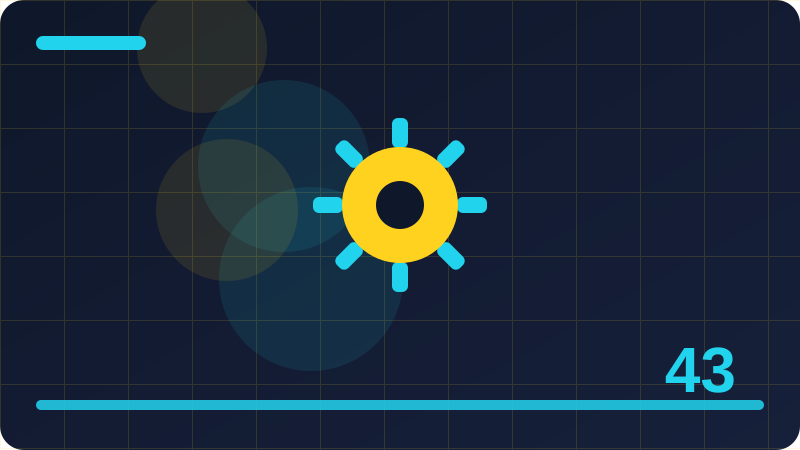

Chapter 43: Privacy, Tracking and Data Control

Section 1: Privacy in Plain Words
In this section on privacy in plain words, we focus on one practical part of privacy, tracking and data control. This section explains one idea in plain words, without jargon getting in the way. If a word feels new, pause and picture what it means in everyday life before you move on. Security ideas often sound complicated because experts use short technical words for simple actions, like locking a door, checking a list, or writing a note. Once you translate the idea into everyday language, the next step usually becomes obvious.
People often ask whether one person can really make a difference against large online threats. The honest answer is yes, at the level that matters most: your own accounts, your own home, and your own team. Most harm starts with a simple weakness close to home, not with a spectacular break-in. By fixing the simple weaknesses first, you remove the easiest path and force any attacker to work much harder, which usually means they move on.
Here is a safe way to practise. First, write down what you want to check and why, in one sentence. Second, work only on a device, account, or network that belongs to you, or that you have clear written permission to use. Third, change one thing at a time and write down what changed, so you can undo it if needed. Fourth, check that everything still works after your change. Fifth, keep your note somewhere safe, because good notes turn a single experiment into lasting knowledge.
When you think about privacy in plain words, keep the same defender mindset you have used throughout this book: work only on systems you own or have written permission to use, change one thing at a time, and keep notes. Another common mistake is treating a tool or a checklist as a guarantee. No tool makes you perfectly safe, and no checklist covers every situation. Tools help you see and organise, but your judgement decides what matters. If a tool reports something alarming, read the detail, check it against what you know about your own devices, and consider whether it matches normal behaviour. Calm checking beats quick panic, and asking for help beats silent worry.
Before you move on, take one small action from this section today, not ten actions tomorrow. A single completed action, written down and checked, is real progress. Tomorrow you can take the next one. Over weeks, those single actions add up to a home, a team, or a career that is noticeably safer, and to confidence that is based on practice rather than hope. When in doubt, choose the safer, simpler option and ask for help. There is no prize for guessing, and a short question to a trusted person can prevent a long repair later. Write things down in your own words. Notes help you remember, help you explain your choices to others, and help you undo a change if it does not work as expected.
Check: In your own words, what is the most important idea from this section on privacy in plain words, and what safe step will you take on your own devices?
Section 2: What Tracking Means
In this section on what tracking means, we focus on one practical part of privacy, tracking and data control. Welcome to a topic that sounds technical but rests on common sense. You already make safety decisions every day, such as locking your home, keeping keys private, and noticing when something looks out of place. This section builds on those habits and shows how the same thinking protects computers, phones, and home networks. Nothing here asks you to take risks or to test anyone else's system.
Why does this matter for an ordinary person? Because small, repeated habits decide most security outcomes. A single strong habit, repeated every week, protects you more than a dramatic one-time fix that you forget. Attackers, scammers, and careless mistakes all look for the easy opening: an unchanged password, an old device, or a setting nobody checked. Closing those easy openings, one at a time, is the heart of good defence.
A useful routine has four parts: look, think, act, and check. Look at the current setting or list before you touch anything. Think about what good looks like and what could go wrong if you change it carelessly. Act with one small, reversible step. Then check the result and write it down. If anything feels unclear, stop and ask a trusted source or a knowledgeable friend instead of guessing. Stopping is not failure; it is good security practice.
When you think about what tracking means, keep the same defender mindset you have used throughout this book: work only on systems you own or have written permission to use, change one thing at a time, and keep notes. Watch out for the temptation to test boundaries that are not yours. Curiosity is a strength for a defender, but it must stay inside permission. Never probe a neighbour's network, a workplace system you do not manage, or a website you do not own, even if you mean no harm. Unauthorised testing can break things, break trust, and break the law. The safe outlet for curiosity is your own lab, your own accounts, and exercises with clear written permission.
To finish, ask yourself three questions: what did I learn, what did I change, and what will I check next week? Write the answers in plain words, as if you were explaining them to a friend who missed the lesson. Teaching an idea in your own words is one of the best ways to remember it. If you cannot explain it simply yet, that is useful information too: it tells you which part to revisit, not that you have failed. Write things down in your own words. Notes help you remember, help you explain your choices to others, and help you undo a change if it does not work as expected. Remember that every household and every team is different. Adapt general advice to your own devices, your own people, and your own risks, rather than copying someone else's setup exactly.
Check: In your own words, what is the most important idea from this section on what tracking means, and what safe step will you take on your own devices?
Section 3: Cookies in Plain Words
In this section on cookies in plain words, we focus on one practical part of privacy, tracking and data control. Think of this topic as one small, practical skill rather than a big mystery. You do not need special talent to understand it, and you do not need expensive equipment to practise it well. The goal of this section is to give you a clear picture you can explain to a friend, and a few safe steps you can try on your own devices. Take it slowly, read each idea twice if it helps, and remember that steady learning beats rushing every time.
The reason this matters is not fear, but control. When you understand what is happening on your own devices, you can make calm choices instead of guessing under pressure. You will know what normal looks like, so unusual things stand out sooner. You will also know what to do next, which keeps a small problem from turning into a large one. That calm, informed control is what employers, families, and communities value in a defender.
Start small and build confidence gradually. Choose the simplest version of the task first, complete it fully, and only then try a slightly harder version. For example, practise on one device before you try three, and practise with a written checklist before you try from memory. Each small success teaches you what normal looks like and makes the next step easier. Rushing to the hardest version first usually creates confusion and mistakes that are easy to avoid.
When you think about cookies in plain words, keep the same defender mindset you have used throughout this book: work only on systems you own or have written permission to use, change one thing at a time, and keep notes. Common mistakes are worth naming, because beginners often make the same ones. The first is changing many settings at once, which makes it hard to know what helped and what caused a problem. The second is copying a setting from the internet without checking whether it fits your own device or household. The third is forgetting to write down the original setting, so undoing a change becomes guesswork. Avoid all three by moving slowly, checking your own device manual, and keeping notes.
Finally, connect this section to your wider learning. Notice how it links to passwords, updates, backups, and careful habits you have already studied. Security is not a set of separate tricks; it is a connected routine where each habit supports the others. A strong password matters more when updates are current, and backups matter more when you practise recovery. Seeing those links helps you build a routine that lasts, rather than a collection of one-time fixes. Remember that every household and every team is different. Adapt general advice to your own devices, your own people, and your own risks, rather than copying someone else's setup exactly.
Check: In your own words, what is the most important idea from this section on cookies in plain words, and what safe step will you take on your own devices?
Section 4: Why Sites Want Your Data
In this section on why sites want your data, we focus on one practical part of privacy, tracking and data control. This section explains one idea in plain words, without jargon getting in the way. If a word feels new, pause and picture what it means in everyday life before you move on. Security ideas often sound complicated because experts use short technical words for simple actions, like locking a door, checking a list, or writing a note. Once you translate the idea into everyday language, the next step usually becomes obvious.
People often ask whether one person can really make a difference against large online threats. The honest answer is yes, at the level that matters most: your own accounts, your own home, and your own team. Most harm starts with a simple weakness close to home, not with a spectacular break-in. By fixing the simple weaknesses first, you remove the easiest path and force any attacker to work much harder, which usually means they move on.
Here is a safe way to practise. First, write down what you want to check and why, in one sentence. Second, work only on a device, account, or network that belongs to you, or that you have clear written permission to use. Third, change one thing at a time and write down what changed, so you can undo it if needed. Fourth, check that everything still works after your change. Fifth, keep your note somewhere safe, because good notes turn a single experiment into lasting knowledge.
When you think about why sites want your data, keep the same defender mindset you have used throughout this book: work only on systems you own or have written permission to use, change one thing at a time, and keep notes. Another common mistake is treating a tool or a checklist as a guarantee. No tool makes you perfectly safe, and no checklist covers every situation. Tools help you see and organise, but your judgement decides what matters. If a tool reports something alarming, read the detail, check it against what you know about your own devices, and consider whether it matches normal behaviour. Calm checking beats quick panic, and asking for help beats silent worry.
Before you move on, take one small action from this section today, not ten actions tomorrow. A single completed action, written down and checked, is real progress. Tomorrow you can take the next one. Over weeks, those single actions add up to a home, a team, or a career that is noticeably safer, and to confidence that is based on practice rather than hope. Check your work after you finish. A quick check that things still work, and that you can undo what you did, is part of the task, not an extra step. Keep learning in small steps. One clear idea, practised well, is worth more than ten ideas skimmed and forgotten.
Check: In your own words, what is the most important idea from this section on why sites want your data, and what safe step will you take on your own devices?
Section 5: Your Browser Privacy Settings
In this section on your browser privacy settings, we focus on one practical part of privacy, tracking and data control. Welcome to a topic that sounds technical but rests on common sense. You already make safety decisions every day, such as locking your home, keeping keys private, and noticing when something looks out of place. This section builds on those habits and shows how the same thinking protects computers, phones, and home networks. Nothing here asks you to take risks or to test anyone else's system.
Why does this matter for an ordinary person? Because small, repeated habits decide most security outcomes. A single strong habit, repeated every week, protects you more than a dramatic one-time fix that you forget. Attackers, scammers, and careless mistakes all look for the easy opening: an unchanged password, an old device, or a setting nobody checked. Closing those easy openings, one at a time, is the heart of good defence.
A useful routine has four parts: look, think, act, and check. Look at the current setting or list before you touch anything. Think about what good looks like and what could go wrong if you change it carelessly. Act with one small, reversible step. Then check the result and write it down. If anything feels unclear, stop and ask a trusted source or a knowledgeable friend instead of guessing. Stopping is not failure; it is good security practice.
When you think about your browser privacy settings, keep the same defender mindset you have used throughout this book: work only on systems you own or have written permission to use, change one thing at a time, and keep notes. Watch out for the temptation to test boundaries that are not yours. Curiosity is a strength for a defender, but it must stay inside permission. Never probe a neighbour's network, a workplace system you do not manage, or a website you do not own, even if you mean no harm. Unauthorised testing can break things, break trust, and break the law. The safe outlet for curiosity is your own lab, your own accounts, and exercises with clear written permission.
To finish, ask yourself three questions: what did I learn, what did I change, and what will I check next week? Write the answers in plain words, as if you were explaining them to a friend who missed the lesson. Teaching an idea in your own words is one of the best ways to remember it. If you cannot explain it simply yet, that is useful information too: it tells you which part to revisit, not that you have failed. Keep learning in small steps. One clear idea, practised well, is worth more than ten ideas skimmed and forgotten. Respect other people's privacy while you practise. Work only with your own data and devices, and ask permission before you look at anything that belongs to someone else.
# Defensive privacy review: list accounts YOU own, so you can review them.
# This script collects no passwords and sends nothing anywhere.
my_accounts = ['email', 'social media', 'shopping']
for account in my_accounts:
print(f'Review privacy settings for: {account}. Check who can see your posts and what data is shared.')Check: In your own words, what is the most important idea from this section on your browser privacy settings, and what safe step will you take on your own devices?
Section 6: Private Browsing: What It Does
In this section on private browsing: what it does, we focus on one practical part of privacy, tracking and data control. Think of this topic as one small, practical skill rather than a big mystery. You do not need special talent to understand it, and you do not need expensive equipment to practise it well. The goal of this section is to give you a clear picture you can explain to a friend, and a few safe steps you can try on your own devices. Take it slowly, read each idea twice if it helps, and remember that steady learning beats rushing every time.
The reason this matters is not fear, but control. When you understand what is happening on your own devices, you can make calm choices instead of guessing under pressure. You will know what normal looks like, so unusual things stand out sooner. You will also know what to do next, which keeps a small problem from turning into a large one. That calm, informed control is what employers, families, and communities value in a defender.
Start small and build confidence gradually. Choose the simplest version of the task first, complete it fully, and only then try a slightly harder version. For example, practise on one device before you try three, and practise with a written checklist before you try from memory. Each small success teaches you what normal looks like and makes the next step easier. Rushing to the hardest version first usually creates confusion and mistakes that are easy to avoid.
When you think about private browsing: what it does, keep the same defender mindset you have used throughout this book: work only on systems you own or have written permission to use, change one thing at a time, and keep notes. Common mistakes are worth naming, because beginners often make the same ones. The first is changing many settings at once, which makes it hard to know what helped and what caused a problem. The second is copying a setting from the internet without checking whether it fits your own device or household. The third is forgetting to write down the original setting, so undoing a change becomes guesswork. Avoid all three by moving slowly, checking your own device manual, and keeping notes.
Finally, connect this section to your wider learning. Notice how it links to passwords, updates, backups, and careful habits you have already studied. Security is not a set of separate tricks; it is a connected routine where each habit supports the others. A strong password matters more when updates are current, and backups matter more when you practise recovery. Seeing those links helps you build a routine that lasts, rather than a collection of one-time fixes. Respect other people's privacy while you practise. Work only with your own data and devices, and ask permission before you look at anything that belongs to someone else.
Check: In your own words, what is the most important idea from this section on private browsing: what it does, and what safe step will you take on your own devices?
Section 7: Private Browsing: What It Does Not Do
In this section on private browsing: what it does not do, we focus on one practical part of privacy, tracking and data control. This section explains one idea in plain words, without jargon getting in the way. If a word feels new, pause and picture what it means in everyday life before you move on. Security ideas often sound complicated because experts use short technical words for simple actions, like locking a door, checking a list, or writing a note. Once you translate the idea into everyday language, the next step usually becomes obvious.
People often ask whether one person can really make a difference against large online threats. The honest answer is yes, at the level that matters most: your own accounts, your own home, and your own team. Most harm starts with a simple weakness close to home, not with a spectacular break-in. By fixing the simple weaknesses first, you remove the easiest path and force any attacker to work much harder, which usually means they move on.
Here is a safe way to practise. First, write down what you want to check and why, in one sentence. Second, work only on a device, account, or network that belongs to you, or that you have clear written permission to use. Third, change one thing at a time and write down what changed, so you can undo it if needed. Fourth, check that everything still works after your change. Fifth, keep your note somewhere safe, because good notes turn a single experiment into lasting knowledge.
When you think about private browsing: what it does not do, keep the same defender mindset you have used throughout this book: work only on systems you own or have written permission to use, change one thing at a time, and keep notes. Another common mistake is treating a tool or a checklist as a guarantee. No tool makes you perfectly safe, and no checklist covers every situation. Tools help you see and organise, but your judgement decides what matters. If a tool reports something alarming, read the detail, check it against what you know about your own devices, and consider whether it matches normal behaviour. Calm checking beats quick panic, and asking for help beats silent worry.
Before you move on, take one small action from this section today, not ten actions tomorrow. A single completed action, written down and checked, is real progress. Tomorrow you can take the next one. Over weeks, those single actions add up to a home, a team, or a career that is noticeably safer, and to confidence that is based on practice rather than hope. Stay patient with yourself. Security skills grow through repetition, and early confusion is normal. Revisit a section after a week of practice and it will often feel much clearer. Good defence is mostly about attention and routine, not about secret knowledge. Pay attention to what changes, keep a simple routine, and review your notes regularly, and you will catch most problems while they are still small.
Check: In your own words, what is the most important idea from this section on private browsing: what it does not do, and what safe step will you take on your own devices?
Section 8: Search Engines and Privacy
In this section on search engines and privacy, we focus on one practical part of privacy, tracking and data control. Welcome to a topic that sounds technical but rests on common sense. You already make safety decisions every day, such as locking your home, keeping keys private, and noticing when something looks out of place. This section builds on those habits and shows how the same thinking protects computers, phones, and home networks. Nothing here asks you to take risks or to test anyone else's system.
Why does this matter for an ordinary person? Because small, repeated habits decide most security outcomes. A single strong habit, repeated every week, protects you more than a dramatic one-time fix that you forget. Attackers, scammers, and careless mistakes all look for the easy opening: an unchanged password, an old device, or a setting nobody checked. Closing those easy openings, one at a time, is the heart of good defence.
A useful routine has four parts: look, think, act, and check. Look at the current setting or list before you touch anything. Think about what good looks like and what could go wrong if you change it carelessly. Act with one small, reversible step. Then check the result and write it down. If anything feels unclear, stop and ask a trusted source or a knowledgeable friend instead of guessing. Stopping is not failure; it is good security practice.
When you think about search engines and privacy, keep the same defender mindset you have used throughout this book: work only on systems you own or have written permission to use, change one thing at a time, and keep notes. Watch out for the temptation to test boundaries that are not yours. Curiosity is a strength for a defender, but it must stay inside permission. Never probe a neighbour's network, a workplace system you do not manage, or a website you do not own, even if you mean no harm. Unauthorised testing can break things, break trust, and break the law. The safe outlet for curiosity is your own lab, your own accounts, and exercises with clear written permission.
To finish, ask yourself three questions: what did I learn, what did I change, and what will I check next week? Write the answers in plain words, as if you were explaining them to a friend who missed the lesson. Teaching an idea in your own words is one of the best ways to remember it. If you cannot explain it simply yet, that is useful information too: it tells you which part to revisit, not that you have failed. Good defence is mostly about attention and routine, not about secret knowledge. Pay attention to what changes, keep a simple routine, and review your notes regularly, and you will catch most problems while they are still small. When in doubt, choose the safer, simpler option and ask for help. There is no prize for guessing, and a short question to a trusted person can prevent a long repair later.
Check: In your own words, what is the most important idea from this section on search engines and privacy, and what safe step will you take on your own devices?
Section 9: Location Data in Plain Words
In this section on location data in plain words, we focus on one practical part of privacy, tracking and data control. Think of this topic as one small, practical skill rather than a big mystery. You do not need special talent to understand it, and you do not need expensive equipment to practise it well. The goal of this section is to give you a clear picture you can explain to a friend, and a few safe steps you can try on your own devices. Take it slowly, read each idea twice if it helps, and remember that steady learning beats rushing every time.
The reason this matters is not fear, but control. When you understand what is happening on your own devices, you can make calm choices instead of guessing under pressure. You will know what normal looks like, so unusual things stand out sooner. You will also know what to do next, which keeps a small problem from turning into a large one. That calm, informed control is what employers, families, and communities value in a defender.
Start small and build confidence gradually. Choose the simplest version of the task first, complete it fully, and only then try a slightly harder version. For example, practise on one device before you try three, and practise with a written checklist before you try from memory. Each small success teaches you what normal looks like and makes the next step easier. Rushing to the hardest version first usually creates confusion and mistakes that are easy to avoid.
When you think about location data in plain words, keep the same defender mindset you have used throughout this book: work only on systems you own or have written permission to use, change one thing at a time, and keep notes. Common mistakes are worth naming, because beginners often make the same ones. The first is changing many settings at once, which makes it hard to know what helped and what caused a problem. The second is copying a setting from the internet without checking whether it fits your own device or household. The third is forgetting to write down the original setting, so undoing a change becomes guesswork. Avoid all three by moving slowly, checking your own device manual, and keeping notes.
Finally, connect this section to your wider learning. Notice how it links to passwords, updates, backups, and careful habits you have already studied. Security is not a set of separate tricks; it is a connected routine where each habit supports the others. A strong password matters more when updates are current, and backups matter more when you practise recovery. Seeing those links helps you build a routine that lasts, rather than a collection of one-time fixes. When in doubt, choose the safer, simpler option and ask for help. There is no prize for guessing, and a short question to a trusted person can prevent a long repair later.
Check: In your own words, what is the most important idea from this section on location data in plain words, and what safe step will you take on your own devices?
Section 10: App Permissions Revisited
In this section on app permissions revisited, we focus on one practical part of privacy, tracking and data control. This section explains one idea in plain words, without jargon getting in the way. If a word feels new, pause and picture what it means in everyday life before you move on. Security ideas often sound complicated because experts use short technical words for simple actions, like locking a door, checking a list, or writing a note. Once you translate the idea into everyday language, the next step usually becomes obvious.
People often ask whether one person can really make a difference against large online threats. The honest answer is yes, at the level that matters most: your own accounts, your own home, and your own team. Most harm starts with a simple weakness close to home, not with a spectacular break-in. By fixing the simple weaknesses first, you remove the easiest path and force any attacker to work much harder, which usually means they move on.
Here is a safe way to practise. First, write down what you want to check and why, in one sentence. Second, work only on a device, account, or network that belongs to you, or that you have clear written permission to use. Third, change one thing at a time and write down what changed, so you can undo it if needed. Fourth, check that everything still works after your change. Fifth, keep your note somewhere safe, because good notes turn a single experiment into lasting knowledge.
When you think about app permissions revisited, keep the same defender mindset you have used throughout this book: work only on systems you own or have written permission to use, change one thing at a time, and keep notes. Another common mistake is treating a tool or a checklist as a guarantee. No tool makes you perfectly safe, and no checklist covers every situation. Tools help you see and organise, but your judgement decides what matters. If a tool reports something alarming, read the detail, check it against what you know about your own devices, and consider whether it matches normal behaviour. Calm checking beats quick panic, and asking for help beats silent worry.
Before you move on, take one small action from this section today, not ten actions tomorrow. A single completed action, written down and checked, is real progress. Tomorrow you can take the next one. Over weeks, those single actions add up to a home, a team, or a career that is noticeably safer, and to confidence that is based on practice rather than hope. Write things down in your own words. Notes help you remember, help you explain your choices to others, and help you undo a change if it does not work as expected. Remember that every household and every team is different. Adapt general advice to your own devices, your own people, and your own risks, rather than copying someone else's setup exactly.
# Defensive privacy review: list accounts YOU own, so you can review them.
# This script collects no passwords and sends nothing anywhere.
my_accounts = ['email', 'social media', 'shopping']
for account in my_accounts:
print(f'Review privacy settings for: {account}. Check who can see your posts and what data is shared.')Check: In your own words, what is the most important idea from this section on app permissions revisited, and what safe step will you take on your own devices?
Section 11: Photos and Hidden Location Data
In this section on photos and hidden location data, we focus on one practical part of privacy, tracking and data control. Welcome to a topic that sounds technical but rests on common sense. You already make safety decisions every day, such as locking your home, keeping keys private, and noticing when something looks out of place. This section builds on those habits and shows how the same thinking protects computers, phones, and home networks. Nothing here asks you to take risks or to test anyone else's system.
Why does this matter for an ordinary person? Because small, repeated habits decide most security outcomes. A single strong habit, repeated every week, protects you more than a dramatic one-time fix that you forget. Attackers, scammers, and careless mistakes all look for the easy opening: an unchanged password, an old device, or a setting nobody checked. Closing those easy openings, one at a time, is the heart of good defence.
A useful routine has four parts: look, think, act, and check. Look at the current setting or list before you touch anything. Think about what good looks like and what could go wrong if you change it carelessly. Act with one small, reversible step. Then check the result and write it down. If anything feels unclear, stop and ask a trusted source or a knowledgeable friend instead of guessing. Stopping is not failure; it is good security practice.
When you think about photos and hidden location data, keep the same defender mindset you have used throughout this book: work only on systems you own or have written permission to use, change one thing at a time, and keep notes. Watch out for the temptation to test boundaries that are not yours. Curiosity is a strength for a defender, but it must stay inside permission. Never probe a neighbour's network, a workplace system you do not manage, or a website you do not own, even if you mean no harm. Unauthorised testing can break things, break trust, and break the law. The safe outlet for curiosity is your own lab, your own accounts, and exercises with clear written permission.
To finish, ask yourself three questions: what did I learn, what did I change, and what will I check next week? Write the answers in plain words, as if you were explaining them to a friend who missed the lesson. Teaching an idea in your own words is one of the best ways to remember it. If you cannot explain it simply yet, that is useful information too: it tells you which part to revisit, not that you have failed. Remember that every household and every team is different. Adapt general advice to your own devices, your own people, and your own risks, rather than copying someone else's setup exactly. Check your work after you finish. A quick check that things still work, and that you can undo what you did, is part of the task, not an extra step.
Check: In your own words, what is the most important idea from this section on photos and hidden location data, and what safe step will you take on your own devices?
Section 12: Social Media Privacy Settings
In this section on social media privacy settings, we focus on one practical part of privacy, tracking and data control. Think of this topic as one small, practical skill rather than a big mystery. You do not need special talent to understand it, and you do not need expensive equipment to practise it well. The goal of this section is to give you a clear picture you can explain to a friend, and a few safe steps you can try on your own devices. Take it slowly, read each idea twice if it helps, and remember that steady learning beats rushing every time.
The reason this matters is not fear, but control. When you understand what is happening on your own devices, you can make calm choices instead of guessing under pressure. You will know what normal looks like, so unusual things stand out sooner. You will also know what to do next, which keeps a small problem from turning into a large one. That calm, informed control is what employers, families, and communities value in a defender.
Start small and build confidence gradually. Choose the simplest version of the task first, complete it fully, and only then try a slightly harder version. For example, practise on one device before you try three, and practise with a written checklist before you try from memory. Each small success teaches you what normal looks like and makes the next step easier. Rushing to the hardest version first usually creates confusion and mistakes that are easy to avoid.
When you think about social media privacy settings, keep the same defender mindset you have used throughout this book: work only on systems you own or have written permission to use, change one thing at a time, and keep notes. Common mistakes are worth naming, because beginners often make the same ones. The first is changing many settings at once, which makes it hard to know what helped and what caused a problem. The second is copying a setting from the internet without checking whether it fits your own device or household. The third is forgetting to write down the original setting, so undoing a change becomes guesswork. Avoid all three by moving slowly, checking your own device manual, and keeping notes.
Finally, connect this section to your wider learning. Notice how it links to passwords, updates, backups, and careful habits you have already studied. Security is not a set of separate tricks; it is a connected routine where each habit supports the others. A strong password matters more when updates are current, and backups matter more when you practise recovery. Seeing those links helps you build a routine that lasts, rather than a collection of one-time fixes. Check your work after you finish. A quick check that things still work, and that you can undo what you did, is part of the task, not an extra step.
Check: In your own words, what is the most important idea from this section on social media privacy settings, and what safe step will you take on your own devices?
Section 13: Who Sees Your Posts
In this section on who sees your posts, we focus on one practical part of privacy, tracking and data control. This section explains one idea in plain words, without jargon getting in the way. If a word feels new, pause and picture what it means in everyday life before you move on. Security ideas often sound complicated because experts use short technical words for simple actions, like locking a door, checking a list, or writing a note. Once you translate the idea into everyday language, the next step usually becomes obvious.
People often ask whether one person can really make a difference against large online threats. The honest answer is yes, at the level that matters most: your own accounts, your own home, and your own team. Most harm starts with a simple weakness close to home, not with a spectacular break-in. By fixing the simple weaknesses first, you remove the easiest path and force any attacker to work much harder, which usually means they move on.
Here is a safe way to practise. First, write down what you want to check and why, in one sentence. Second, work only on a device, account, or network that belongs to you, or that you have clear written permission to use. Third, change one thing at a time and write down what changed, so you can undo it if needed. Fourth, check that everything still works after your change. Fifth, keep your note somewhere safe, because good notes turn a single experiment into lasting knowledge.
When you think about who sees your posts, keep the same defender mindset you have used throughout this book: work only on systems you own or have written permission to use, change one thing at a time, and keep notes. Another common mistake is treating a tool or a checklist as a guarantee. No tool makes you perfectly safe, and no checklist covers every situation. Tools help you see and organise, but your judgement decides what matters. If a tool reports something alarming, read the detail, check it against what you know about your own devices, and consider whether it matches normal behaviour. Calm checking beats quick panic, and asking for help beats silent worry.
Before you move on, take one small action from this section today, not ten actions tomorrow. A single completed action, written down and checked, is real progress. Tomorrow you can take the next one. Over weeks, those single actions add up to a home, a team, or a career that is noticeably safer, and to confidence that is based on practice rather than hope. Keep learning in small steps. One clear idea, practised well, is worth more than ten ideas skimmed and forgotten. Respect other people's privacy while you practise. Work only with your own data and devices, and ask permission before you look at anything that belongs to someone else. Stay patient with yourself. Security skills grow through repetition, and early confusion is normal. Revisit a section after a week of practice and it will often feel much clearer.
Check: In your own words, what is the most important idea from this section on who sees your posts, and what safe step will you take on your own devices?
Section 14: Data Brokers in Plain Words
In this section on data brokers in plain words, we focus on one practical part of privacy, tracking and data control. Welcome to a topic that sounds technical but rests on common sense. You already make safety decisions every day, such as locking your home, keeping keys private, and noticing when something looks out of place. This section builds on those habits and shows how the same thinking protects computers, phones, and home networks. Nothing here asks you to take risks or to test anyone else's system.
Why does this matter for an ordinary person? Because small, repeated habits decide most security outcomes. A single strong habit, repeated every week, protects you more than a dramatic one-time fix that you forget. Attackers, scammers, and careless mistakes all look for the easy opening: an unchanged password, an old device, or a setting nobody checked. Closing those easy openings, one at a time, is the heart of good defence.
A useful routine has four parts: look, think, act, and check. Look at the current setting or list before you touch anything. Think about what good looks like and what could go wrong if you change it carelessly. Act with one small, reversible step. Then check the result and write it down. If anything feels unclear, stop and ask a trusted source or a knowledgeable friend instead of guessing. Stopping is not failure; it is good security practice.
When you think about data brokers in plain words, keep the same defender mindset you have used throughout this book: work only on systems you own or have written permission to use, change one thing at a time, and keep notes. Watch out for the temptation to test boundaries that are not yours. Curiosity is a strength for a defender, but it must stay inside permission. Never probe a neighbour's network, a workplace system you do not manage, or a website you do not own, even if you mean no harm. Unauthorised testing can break things, break trust, and break the law. The safe outlet for curiosity is your own lab, your own accounts, and exercises with clear written permission.
To finish, ask yourself three questions: what did I learn, what did I change, and what will I check next week? Write the answers in plain words, as if you were explaining them to a friend who missed the lesson. Teaching an idea in your own words is one of the best ways to remember it. If you cannot explain it simply yet, that is useful information too: it tells you which part to revisit, not that you have failed. Respect other people's privacy while you practise. Work only with your own data and devices, and ask permission before you look at anything that belongs to someone else. Stay patient with yourself. Security skills grow through repetition, and early confusion is normal. Revisit a section after a week of practice and it will often feel much clearer.
Check: In your own words, what is the most important idea from this section on data brokers in plain words, and what safe step will you take on your own devices?
Section 15: Removing Your Data Where You Can
In this section on removing your data where you can, we focus on one practical part of privacy, tracking and data control. Think of this topic as one small, practical skill rather than a big mystery. You do not need special talent to understand it, and you do not need expensive equipment to practise it well. The goal of this section is to give you a clear picture you can explain to a friend, and a few safe steps you can try on your own devices. Take it slowly, read each idea twice if it helps, and remember that steady learning beats rushing every time.
The reason this matters is not fear, but control. When you understand what is happening on your own devices, you can make calm choices instead of guessing under pressure. You will know what normal looks like, so unusual things stand out sooner. You will also know what to do next, which keeps a small problem from turning into a large one. That calm, informed control is what employers, families, and communities value in a defender.
Start small and build confidence gradually. Choose the simplest version of the task first, complete it fully, and only then try a slightly harder version. For example, practise on one device before you try three, and practise with a written checklist before you try from memory. Each small success teaches you what normal looks like and makes the next step easier. Rushing to the hardest version first usually creates confusion and mistakes that are easy to avoid.
When you think about removing your data where you can, keep the same defender mindset you have used throughout this book: work only on systems you own or have written permission to use, change one thing at a time, and keep notes. Common mistakes are worth naming, because beginners often make the same ones. The first is changing many settings at once, which makes it hard to know what helped and what caused a problem. The second is copying a setting from the internet without checking whether it fits your own device or household. The third is forgetting to write down the original setting, so undoing a change becomes guesswork. Avoid all three by moving slowly, checking your own device manual, and keeping notes.
Finally, connect this section to your wider learning. Notice how it links to passwords, updates, backups, and careful habits you have already studied. Security is not a set of separate tricks; it is a connected routine where each habit supports the others. A strong password matters more when updates are current, and backups matter more when you practise recovery. Seeing those links helps you build a routine that lasts, rather than a collection of one-time fixes. Stay patient with yourself. Security skills grow through repetition, and early confusion is normal. Revisit a section after a week of practice and it will often feel much clearer.
# Defensive privacy review: list accounts YOU own, so you can review them.
# This script collects no passwords and sends nothing anywhere.
my_accounts = ['email', 'social media', 'shopping']
for account in my_accounts:
print(f'Review privacy settings for: {account}. Check who can see your posts and what data is shared.')Check: In your own words, what is the most important idea from this section on removing your data where you can, and what safe step will you take on your own devices?
Section 16: Email Trackers and Pixels
In this section on email trackers and pixels, we focus on one practical part of privacy, tracking and data control. This section explains one idea in plain words, without jargon getting in the way. If a word feels new, pause and picture what it means in everyday life before you move on. Security ideas often sound complicated because experts use short technical words for simple actions, like locking a door, checking a list, or writing a note. Once you translate the idea into everyday language, the next step usually becomes obvious.
People often ask whether one person can really make a difference against large online threats. The honest answer is yes, at the level that matters most: your own accounts, your own home, and your own team. Most harm starts with a simple weakness close to home, not with a spectacular break-in. By fixing the simple weaknesses first, you remove the easiest path and force any attacker to work much harder, which usually means they move on.
Here is a safe way to practise. First, write down what you want to check and why, in one sentence. Second, work only on a device, account, or network that belongs to you, or that you have clear written permission to use. Third, change one thing at a time and write down what changed, so you can undo it if needed. Fourth, check that everything still works after your change. Fifth, keep your note somewhere safe, because good notes turn a single experiment into lasting knowledge.
When you think about email trackers and pixels, keep the same defender mindset you have used throughout this book: work only on systems you own or have written permission to use, change one thing at a time, and keep notes. Another common mistake is treating a tool or a checklist as a guarantee. No tool makes you perfectly safe, and no checklist covers every situation. Tools help you see and organise, but your judgement decides what matters. If a tool reports something alarming, read the detail, check it against what you know about your own devices, and consider whether it matches normal behaviour. Calm checking beats quick panic, and asking for help beats silent worry.
Before you move on, take one small action from this section today, not ten actions tomorrow. A single completed action, written down and checked, is real progress. Tomorrow you can take the next one. Over weeks, those single actions add up to a home, a team, or a career that is noticeably safer, and to confidence that is based on practice rather than hope. Good defence is mostly about attention and routine, not about secret knowledge. Pay attention to what changes, keep a simple routine, and review your notes regularly, and you will catch most problems while they are still small. When in doubt, choose the safer, simpler option and ask for help. There is no prize for guessing, and a short question to a trusted person can prevent a long repair later.
Check: In your own words, what is the most important idea from this section on email trackers and pixels, and what safe step will you take on your own devices?
Section 17: Newsletters and Unsubscribing
In this section on newsletters and unsubscribing, we focus on one practical part of privacy, tracking and data control. Welcome to a topic that sounds technical but rests on common sense. You already make safety decisions every day, such as locking your home, keeping keys private, and noticing when something looks out of place. This section builds on those habits and shows how the same thinking protects computers, phones, and home networks. Nothing here asks you to take risks or to test anyone else's system.
Why does this matter for an ordinary person? Because small, repeated habits decide most security outcomes. A single strong habit, repeated every week, protects you more than a dramatic one-time fix that you forget. Attackers, scammers, and careless mistakes all look for the easy opening: an unchanged password, an old device, or a setting nobody checked. Closing those easy openings, one at a time, is the heart of good defence.
A useful routine has four parts: look, think, act, and check. Look at the current setting or list before you touch anything. Think about what good looks like and what could go wrong if you change it carelessly. Act with one small, reversible step. Then check the result and write it down. If anything feels unclear, stop and ask a trusted source or a knowledgeable friend instead of guessing. Stopping is not failure; it is good security practice.
When you think about newsletters and unsubscribing, keep the same defender mindset you have used throughout this book: work only on systems you own or have written permission to use, change one thing at a time, and keep notes. Watch out for the temptation to test boundaries that are not yours. Curiosity is a strength for a defender, but it must stay inside permission. Never probe a neighbour's network, a workplace system you do not manage, or a website you do not own, even if you mean no harm. Unauthorised testing can break things, break trust, and break the law. The safe outlet for curiosity is your own lab, your own accounts, and exercises with clear written permission.
To finish, ask yourself three questions: what did I learn, what did I change, and what will I check next week? Write the answers in plain words, as if you were explaining them to a friend who missed the lesson. Teaching an idea in your own words is one of the best ways to remember it. If you cannot explain it simply yet, that is useful information too: it tells you which part to revisit, not that you have failed. When in doubt, choose the safer, simpler option and ask for help. There is no prize for guessing, and a short question to a trusted person can prevent a long repair later. Write things down in your own words. Notes help you remember, help you explain your choices to others, and help you undo a change if it does not work as expected.
Check: In your own words, what is the most important idea from this section on newsletters and unsubscribing, and what safe step will you take on your own devices?
Section 18: Passwords and Privacy Together
In this section on passwords and privacy together, we focus on one practical part of privacy, tracking and data control. Think of this topic as one small, practical skill rather than a big mystery. You do not need special talent to understand it, and you do not need expensive equipment to practise it well. The goal of this section is to give you a clear picture you can explain to a friend, and a few safe steps you can try on your own devices. Take it slowly, read each idea twice if it helps, and remember that steady learning beats rushing every time.
The reason this matters is not fear, but control. When you understand what is happening on your own devices, you can make calm choices instead of guessing under pressure. You will know what normal looks like, so unusual things stand out sooner. You will also know what to do next, which keeps a small problem from turning into a large one. That calm, informed control is what employers, families, and communities value in a defender.
Start small and build confidence gradually. Choose the simplest version of the task first, complete it fully, and only then try a slightly harder version. For example, practise on one device before you try three, and practise with a written checklist before you try from memory. Each small success teaches you what normal looks like and makes the next step easier. Rushing to the hardest version first usually creates confusion and mistakes that are easy to avoid.
When you think about passwords and privacy together, keep the same defender mindset you have used throughout this book: work only on systems you own or have written permission to use, change one thing at a time, and keep notes. Common mistakes are worth naming, because beginners often make the same ones. The first is changing many settings at once, which makes it hard to know what helped and what caused a problem. The second is copying a setting from the internet without checking whether it fits your own device or household. The third is forgetting to write down the original setting, so undoing a change becomes guesswork. Avoid all three by moving slowly, checking your own device manual, and keeping notes.
Finally, connect this section to your wider learning. Notice how it links to passwords, updates, backups, and careful habits you have already studied. Security is not a set of separate tricks; it is a connected routine where each habit supports the others. A strong password matters more when updates are current, and backups matter more when you practise recovery. Seeing those links helps you build a routine that lasts, rather than a collection of one-time fixes. Write things down in your own words. Notes help you remember, help you explain your choices to others, and help you undo a change if it does not work as expected.
Check: In your own words, what is the most important idea from this section on passwords and privacy together, and what safe step will you take on your own devices?
Section 19: Two-Factor and Privacy
In this section on two-factor and privacy, we focus on one practical part of privacy, tracking and data control. This section explains one idea in plain words, without jargon getting in the way. If a word feels new, pause and picture what it means in everyday life before you move on. Security ideas often sound complicated because experts use short technical words for simple actions, like locking a door, checking a list, or writing a note. Once you translate the idea into everyday language, the next step usually becomes obvious.
People often ask whether one person can really make a difference against large online threats. The honest answer is yes, at the level that matters most: your own accounts, your own home, and your own team. Most harm starts with a simple weakness close to home, not with a spectacular break-in. By fixing the simple weaknesses first, you remove the easiest path and force any attacker to work much harder, which usually means they move on.
Here is a safe way to practise. First, write down what you want to check and why, in one sentence. Second, work only on a device, account, or network that belongs to you, or that you have clear written permission to use. Third, change one thing at a time and write down what changed, so you can undo it if needed. Fourth, check that everything still works after your change. Fifth, keep your note somewhere safe, because good notes turn a single experiment into lasting knowledge.
When you think about two-factor and privacy, keep the same defender mindset you have used throughout this book: work only on systems you own or have written permission to use, change one thing at a time, and keep notes. Another common mistake is treating a tool or a checklist as a guarantee. No tool makes you perfectly safe, and no checklist covers every situation. Tools help you see and organise, but your judgement decides what matters. If a tool reports something alarming, read the detail, check it against what you know about your own devices, and consider whether it matches normal behaviour. Calm checking beats quick panic, and asking for help beats silent worry.
Before you move on, take one small action from this section today, not ten actions tomorrow. A single completed action, written down and checked, is real progress. Tomorrow you can take the next one. Over weeks, those single actions add up to a home, a team, or a career that is noticeably safer, and to confidence that is based on practice rather than hope. Remember that every household and every team is different. Adapt general advice to your own devices, your own people, and your own risks, rather than copying someone else's setup exactly. Check your work after you finish. A quick check that things still work, and that you can undo what you did, is part of the task, not an extra step.
Check: In your own words, what is the most important idea from this section on two-factor and privacy, and what safe step will you take on your own devices?
Section 20: Children's Privacy Basics
In this section on children's privacy basics, we focus on one practical part of privacy, tracking and data control. Welcome to a topic that sounds technical but rests on common sense. You already make safety decisions every day, such as locking your home, keeping keys private, and noticing when something looks out of place. This section builds on those habits and shows how the same thinking protects computers, phones, and home networks. Nothing here asks you to take risks or to test anyone else's system.
Why does this matter for an ordinary person? Because small, repeated habits decide most security outcomes. A single strong habit, repeated every week, protects you more than a dramatic one-time fix that you forget. Attackers, scammers, and careless mistakes all look for the easy opening: an unchanged password, an old device, or a setting nobody checked. Closing those easy openings, one at a time, is the heart of good defence.
A useful routine has four parts: look, think, act, and check. Look at the current setting or list before you touch anything. Think about what good looks like and what could go wrong if you change it carelessly. Act with one small, reversible step. Then check the result and write it down. If anything feels unclear, stop and ask a trusted source or a knowledgeable friend instead of guessing. Stopping is not failure; it is good security practice.
When you think about children's privacy basics, keep the same defender mindset you have used throughout this book: work only on systems you own or have written permission to use, change one thing at a time, and keep notes. Watch out for the temptation to test boundaries that are not yours. Curiosity is a strength for a defender, but it must stay inside permission. Never probe a neighbour's network, a workplace system you do not manage, or a website you do not own, even if you mean no harm. Unauthorised testing can break things, break trust, and break the law. The safe outlet for curiosity is your own lab, your own accounts, and exercises with clear written permission.
To finish, ask yourself three questions: what did I learn, what did I change, and what will I check next week? Write the answers in plain words, as if you were explaining them to a friend who missed the lesson. Teaching an idea in your own words is one of the best ways to remember it. If you cannot explain it simply yet, that is useful information too: it tells you which part to revisit, not that you have failed. Check your work after you finish. A quick check that things still work, and that you can undo what you did, is part of the task, not an extra step. Keep learning in small steps. One clear idea, practised well, is worth more than ten ideas skimmed and forgotten.
# Defensive privacy review: list accounts YOU own, so you can review them.
# This script collects no passwords and sends nothing anywhere.
my_accounts = ['email', 'social media', 'shopping']
for account in my_accounts:
print(f'Review privacy settings for: {account}. Check who can see your posts and what data is shared.')Check: In your own words, what is the most important idea from this section on children's privacy basics, and what safe step will you take on your own devices?
Section 21: Family Privacy Conversations
In this section on family privacy conversations, we focus on one practical part of privacy, tracking and data control. Think of this topic as one small, practical skill rather than a big mystery. You do not need special talent to understand it, and you do not need expensive equipment to practise it well. The goal of this section is to give you a clear picture you can explain to a friend, and a few safe steps you can try on your own devices. Take it slowly, read each idea twice if it helps, and remember that steady learning beats rushing every time.
The reason this matters is not fear, but control. When you understand what is happening on your own devices, you can make calm choices instead of guessing under pressure. You will know what normal looks like, so unusual things stand out sooner. You will also know what to do next, which keeps a small problem from turning into a large one. That calm, informed control is what employers, families, and communities value in a defender.
Start small and build confidence gradually. Choose the simplest version of the task first, complete it fully, and only then try a slightly harder version. For example, practise on one device before you try three, and practise with a written checklist before you try from memory. Each small success teaches you what normal looks like and makes the next step easier. Rushing to the hardest version first usually creates confusion and mistakes that are easy to avoid.
When you think about family privacy conversations, keep the same defender mindset you have used throughout this book: work only on systems you own or have written permission to use, change one thing at a time, and keep notes. Common mistakes are worth naming, because beginners often make the same ones. The first is changing many settings at once, which makes it hard to know what helped and what caused a problem. The second is copying a setting from the internet without checking whether it fits your own device or household. The third is forgetting to write down the original setting, so undoing a change becomes guesswork. Avoid all three by moving slowly, checking your own device manual, and keeping notes.
Finally, connect this section to your wider learning. Notice how it links to passwords, updates, backups, and careful habits you have already studied. Security is not a set of separate tricks; it is a connected routine where each habit supports the others. A strong password matters more when updates are current, and backups matter more when you practise recovery. Seeing those links helps you build a routine that lasts, rather than a collection of one-time fixes. Keep learning in small steps. One clear idea, practised well, is worth more than ten ideas skimmed and forgotten. Respect other people's privacy while you practise. Work only with your own data and devices, and ask permission before you look at anything that belongs to someone else.
Check: In your own words, what is the most important idea from this section on family privacy conversations, and what safe step will you take on your own devices?
Section 22: Work and Personal Data Separation
In this section on work and personal data separation, we focus on one practical part of privacy, tracking and data control. This section explains one idea in plain words, without jargon getting in the way. If a word feels new, pause and picture what it means in everyday life before you move on. Security ideas often sound complicated because experts use short technical words for simple actions, like locking a door, checking a list, or writing a note. Once you translate the idea into everyday language, the next step usually becomes obvious.
People often ask whether one person can really make a difference against large online threats. The honest answer is yes, at the level that matters most: your own accounts, your own home, and your own team. Most harm starts with a simple weakness close to home, not with a spectacular break-in. By fixing the simple weaknesses first, you remove the easiest path and force any attacker to work much harder, which usually means they move on.
Here is a safe way to practise. First, write down what you want to check and why, in one sentence. Second, work only on a device, account, or network that belongs to you, or that you have clear written permission to use. Third, change one thing at a time and write down what changed, so you can undo it if needed. Fourth, check that everything still works after your change. Fifth, keep your note somewhere safe, because good notes turn a single experiment into lasting knowledge.
When you think about work and personal data separation, keep the same defender mindset you have used throughout this book: work only on systems you own or have written permission to use, change one thing at a time, and keep notes. Another common mistake is treating a tool or a checklist as a guarantee. No tool makes you perfectly safe, and no checklist covers every situation. Tools help you see and organise, but your judgement decides what matters. If a tool reports something alarming, read the detail, check it against what you know about your own devices, and consider whether it matches normal behaviour. Calm checking beats quick panic, and asking for help beats silent worry.
Before you move on, take one small action from this section today, not ten actions tomorrow. A single completed action, written down and checked, is real progress. Tomorrow you can take the next one. Over weeks, those single actions add up to a home, a team, or a career that is noticeably safer, and to confidence that is based on practice rather than hope. Respect other people's privacy while you practise. Work only with your own data and devices, and ask permission before you look at anything that belongs to someone else. Stay patient with yourself. Security skills grow through repetition, and early confusion is normal. Revisit a section after a week of practice and it will often feel much clearer.
Check: In your own words, what is the most important idea from this section on work and personal data separation, and what safe step will you take on your own devices?
Section 23: Cloud Storage and Privacy
In this section on cloud storage and privacy, we focus on one practical part of privacy, tracking and data control. Welcome to a topic that sounds technical but rests on common sense. You already make safety decisions every day, such as locking your home, keeping keys private, and noticing when something looks out of place. This section builds on those habits and shows how the same thinking protects computers, phones, and home networks. Nothing here asks you to take risks or to test anyone else's system.
Why does this matter for an ordinary person? Because small, repeated habits decide most security outcomes. A single strong habit, repeated every week, protects you more than a dramatic one-time fix that you forget. Attackers, scammers, and careless mistakes all look for the easy opening: an unchanged password, an old device, or a setting nobody checked. Closing those easy openings, one at a time, is the heart of good defence.
A useful routine has four parts: look, think, act, and check. Look at the current setting or list before you touch anything. Think about what good looks like and what could go wrong if you change it carelessly. Act with one small, reversible step. Then check the result and write it down. If anything feels unclear, stop and ask a trusted source or a knowledgeable friend instead of guessing. Stopping is not failure; it is good security practice.
When you think about cloud storage and privacy, keep the same defender mindset you have used throughout this book: work only on systems you own or have written permission to use, change one thing at a time, and keep notes. Watch out for the temptation to test boundaries that are not yours. Curiosity is a strength for a defender, but it must stay inside permission. Never probe a neighbour's network, a workplace system you do not manage, or a website you do not own, even if you mean no harm. Unauthorised testing can break things, break trust, and break the law. The safe outlet for curiosity is your own lab, your own accounts, and exercises with clear written permission.
To finish, ask yourself three questions: what did I learn, what did I change, and what will I check next week? Write the answers in plain words, as if you were explaining them to a friend who missed the lesson. Teaching an idea in your own words is one of the best ways to remember it. If you cannot explain it simply yet, that is useful information too: it tells you which part to revisit, not that you have failed. Stay patient with yourself. Security skills grow through repetition, and early confusion is normal. Revisit a section after a week of practice and it will often feel much clearer. Good defence is mostly about attention and routine, not about secret knowledge. Pay attention to what changes, keep a simple routine, and review your notes regularly, and you will catch most problems while they are still small.
Check: In your own words, what is the most important idea from this section on cloud storage and privacy, and what safe step will you take on your own devices?
Section 24: Backups and Privacy
In this section on backups and privacy, we focus on one practical part of privacy, tracking and data control. Think of this topic as one small, practical skill rather than a big mystery. You do not need special talent to understand it, and you do not need expensive equipment to practise it well. The goal of this section is to give you a clear picture you can explain to a friend, and a few safe steps you can try on your own devices. Take it slowly, read each idea twice if it helps, and remember that steady learning beats rushing every time.
The reason this matters is not fear, but control. When you understand what is happening on your own devices, you can make calm choices instead of guessing under pressure. You will know what normal looks like, so unusual things stand out sooner. You will also know what to do next, which keeps a small problem from turning into a large one. That calm, informed control is what employers, families, and communities value in a defender.
Start small and build confidence gradually. Choose the simplest version of the task first, complete it fully, and only then try a slightly harder version. For example, practise on one device before you try three, and practise with a written checklist before you try from memory. Each small success teaches you what normal looks like and makes the next step easier. Rushing to the hardest version first usually creates confusion and mistakes that are easy to avoid.
When you think about backups and privacy, keep the same defender mindset you have used throughout this book: work only on systems you own or have written permission to use, change one thing at a time, and keep notes. Common mistakes are worth naming, because beginners often make the same ones. The first is changing many settings at once, which makes it hard to know what helped and what caused a problem. The second is copying a setting from the internet without checking whether it fits your own device or household. The third is forgetting to write down the original setting, so undoing a change becomes guesswork. Avoid all three by moving slowly, checking your own device manual, and keeping notes.
Finally, connect this section to your wider learning. Notice how it links to passwords, updates, backups, and careful habits you have already studied. Security is not a set of separate tricks; it is a connected routine where each habit supports the others. A strong password matters more when updates are current, and backups matter more when you practise recovery. Seeing those links helps you build a routine that lasts, rather than a collection of one-time fixes. Good defence is mostly about attention and routine, not about secret knowledge. Pay attention to what changes, keep a simple routine, and review your notes regularly, and you will catch most problems while they are still small.
Check: In your own words, what is the most important idea from this section on backups and privacy, and what safe step will you take on your own devices?
Section 25: Deleting Old Accounts
In this section on deleting old accounts, we focus on one practical part of privacy, tracking and data control. This section explains one idea in plain words, without jargon getting in the way. If a word feels new, pause and picture what it means in everyday life before you move on. Security ideas often sound complicated because experts use short technical words for simple actions, like locking a door, checking a list, or writing a note. Once you translate the idea into everyday language, the next step usually becomes obvious.
People often ask whether one person can really make a difference against large online threats. The honest answer is yes, at the level that matters most: your own accounts, your own home, and your own team. Most harm starts with a simple weakness close to home, not with a spectacular break-in. By fixing the simple weaknesses first, you remove the easiest path and force any attacker to work much harder, which usually means they move on.
Here is a safe way to practise. First, write down what you want to check and why, in one sentence. Second, work only on a device, account, or network that belongs to you, or that you have clear written permission to use. Third, change one thing at a time and write down what changed, so you can undo it if needed. Fourth, check that everything still works after your change. Fifth, keep your note somewhere safe, because good notes turn a single experiment into lasting knowledge.
When you think about deleting old accounts, keep the same defender mindset you have used throughout this book: work only on systems you own or have written permission to use, change one thing at a time, and keep notes. Another common mistake is treating a tool or a checklist as a guarantee. No tool makes you perfectly safe, and no checklist covers every situation. Tools help you see and organise, but your judgement decides what matters. If a tool reports something alarming, read the detail, check it against what you know about your own devices, and consider whether it matches normal behaviour. Calm checking beats quick panic, and asking for help beats silent worry.
Before you move on, take one small action from this section today, not ten actions tomorrow. A single completed action, written down and checked, is real progress. Tomorrow you can take the next one. Over weeks, those single actions add up to a home, a team, or a career that is noticeably safer, and to confidence that is based on practice rather than hope. When in doubt, choose the safer, simpler option and ask for help. There is no prize for guessing, and a short question to a trusted person can prevent a long repair later. Write things down in your own words. Notes help you remember, help you explain your choices to others, and help you undo a change if it does not work as expected.
# Defensive privacy review: list accounts YOU own, so you can review them.
# This script collects no passwords and sends nothing anywhere.
my_accounts = ['email', 'social media', 'shopping']
for account in my_accounts:
print(f'Review privacy settings for: {account}. Check who can see your posts and what data is shared.')Check: In your own words, what is the most important idea from this section on deleting old accounts, and what safe step will you take on your own devices?
Section 26: Old Posts and Digital Footprints
In this section on old posts and digital footprints, we focus on one practical part of privacy, tracking and data control. Welcome to a topic that sounds technical but rests on common sense. You already make safety decisions every day, such as locking your home, keeping keys private, and noticing when something looks out of place. This section builds on those habits and shows how the same thinking protects computers, phones, and home networks. Nothing here asks you to take risks or to test anyone else's system.
Why does this matter for an ordinary person? Because small, repeated habits decide most security outcomes. A single strong habit, repeated every week, protects you more than a dramatic one-time fix that you forget. Attackers, scammers, and careless mistakes all look for the easy opening: an unchanged password, an old device, or a setting nobody checked. Closing those easy openings, one at a time, is the heart of good defence.
A useful routine has four parts: look, think, act, and check. Look at the current setting or list before you touch anything. Think about what good looks like and what could go wrong if you change it carelessly. Act with one small, reversible step. Then check the result and write it down. If anything feels unclear, stop and ask a trusted source or a knowledgeable friend instead of guessing. Stopping is not failure; it is good security practice.
When you think about old posts and digital footprints, keep the same defender mindset you have used throughout this book: work only on systems you own or have written permission to use, change one thing at a time, and keep notes. Watch out for the temptation to test boundaries that are not yours. Curiosity is a strength for a defender, but it must stay inside permission. Never probe a neighbour's network, a workplace system you do not manage, or a website you do not own, even if you mean no harm. Unauthorised testing can break things, break trust, and break the law. The safe outlet for curiosity is your own lab, your own accounts, and exercises with clear written permission.
To finish, ask yourself three questions: what did I learn, what did I change, and what will I check next week? Write the answers in plain words, as if you were explaining them to a friend who missed the lesson. Teaching an idea in your own words is one of the best ways to remember it. If you cannot explain it simply yet, that is useful information too: it tells you which part to revisit, not that you have failed. Write things down in your own words. Notes help you remember, help you explain your choices to others, and help you undo a change if it does not work as expected. Remember that every household and every team is different. Adapt general advice to your own devices, your own people, and your own risks, rather than copying someone else's setup exactly.
Check: In your own words, what is the most important idea from this section on old posts and digital footprints, and what safe step will you take on your own devices?
Section 27: Thinking Before You Post
In this section on thinking before you post, we focus on one practical part of privacy, tracking and data control. Think of this topic as one small, practical skill rather than a big mystery. You do not need special talent to understand it, and you do not need expensive equipment to practise it well. The goal of this section is to give you a clear picture you can explain to a friend, and a few safe steps you can try on your own devices. Take it slowly, read each idea twice if it helps, and remember that steady learning beats rushing every time.
The reason this matters is not fear, but control. When you understand what is happening on your own devices, you can make calm choices instead of guessing under pressure. You will know what normal looks like, so unusual things stand out sooner. You will also know what to do next, which keeps a small problem from turning into a large one. That calm, informed control is what employers, families, and communities value in a defender.
Start small and build confidence gradually. Choose the simplest version of the task first, complete it fully, and only then try a slightly harder version. For example, practise on one device before you try three, and practise with a written checklist before you try from memory. Each small success teaches you what normal looks like and makes the next step easier. Rushing to the hardest version first usually creates confusion and mistakes that are easy to avoid.
When you think about thinking before you post, keep the same defender mindset you have used throughout this book: work only on systems you own or have written permission to use, change one thing at a time, and keep notes. Common mistakes are worth naming, because beginners often make the same ones. The first is changing many settings at once, which makes it hard to know what helped and what caused a problem. The second is copying a setting from the internet without checking whether it fits your own device or household. The third is forgetting to write down the original setting, so undoing a change becomes guesswork. Avoid all three by moving slowly, checking your own device manual, and keeping notes.
Finally, connect this section to your wider learning. Notice how it links to passwords, updates, backups, and careful habits you have already studied. Security is not a set of separate tricks; it is a connected routine where each habit supports the others. A strong password matters more when updates are current, and backups matter more when you practise recovery. Seeing those links helps you build a routine that lasts, rather than a collection of one-time fixes. Remember that every household and every team is different. Adapt general advice to your own devices, your own people, and your own risks, rather than copying someone else's setup exactly.
Check: In your own words, what is the most important idea from this section on thinking before you post, and what safe step will you take on your own devices?
Section 28: Friends, Tags and Consent
In this section on friends, tags and consent, we focus on one practical part of privacy, tracking and data control. This section explains one idea in plain words, without jargon getting in the way. If a word feels new, pause and picture what it means in everyday life before you move on. Security ideas often sound complicated because experts use short technical words for simple actions, like locking a door, checking a list, or writing a note. Once you translate the idea into everyday language, the next step usually becomes obvious.
People often ask whether one person can really make a difference against large online threats. The honest answer is yes, at the level that matters most: your own accounts, your own home, and your own team. Most harm starts with a simple weakness close to home, not with a spectacular break-in. By fixing the simple weaknesses first, you remove the easiest path and force any attacker to work much harder, which usually means they move on.
Here is a safe way to practise. First, write down what you want to check and why, in one sentence. Second, work only on a device, account, or network that belongs to you, or that you have clear written permission to use. Third, change one thing at a time and write down what changed, so you can undo it if needed. Fourth, check that everything still works after your change. Fifth, keep your note somewhere safe, because good notes turn a single experiment into lasting knowledge.
When you think about friends, tags and consent, keep the same defender mindset you have used throughout this book: work only on systems you own or have written permission to use, change one thing at a time, and keep notes. Another common mistake is treating a tool or a checklist as a guarantee. No tool makes you perfectly safe, and no checklist covers every situation. Tools help you see and organise, but your judgement decides what matters. If a tool reports something alarming, read the detail, check it against what you know about your own devices, and consider whether it matches normal behaviour. Calm checking beats quick panic, and asking for help beats silent worry.
Before you move on, take one small action from this section today, not ten actions tomorrow. A single completed action, written down and checked, is real progress. Tomorrow you can take the next one. Over weeks, those single actions add up to a home, a team, or a career that is noticeably safer, and to confidence that is based on practice rather than hope. Check your work after you finish. A quick check that things still work, and that you can undo what you did, is part of the task, not an extra step. Keep learning in small steps. One clear idea, practised well, is worth more than ten ideas skimmed and forgotten.
Check: In your own words, what is the most important idea from this section on friends, tags and consent, and what safe step will you take on your own devices?
Section 29: Advertising Choices in Plain Words
In this section on advertising choices in plain words, we focus on one practical part of privacy, tracking and data control. Welcome to a topic that sounds technical but rests on common sense. You already make safety decisions every day, such as locking your home, keeping keys private, and noticing when something looks out of place. This section builds on those habits and shows how the same thinking protects computers, phones, and home networks. Nothing here asks you to take risks or to test anyone else's system.
Why does this matter for an ordinary person? Because small, repeated habits decide most security outcomes. A single strong habit, repeated every week, protects you more than a dramatic one-time fix that you forget. Attackers, scammers, and careless mistakes all look for the easy opening: an unchanged password, an old device, or a setting nobody checked. Closing those easy openings, one at a time, is the heart of good defence.
A useful routine has four parts: look, think, act, and check. Look at the current setting or list before you touch anything. Think about what good looks like and what could go wrong if you change it carelessly. Act with one small, reversible step. Then check the result and write it down. If anything feels unclear, stop and ask a trusted source or a knowledgeable friend instead of guessing. Stopping is not failure; it is good security practice.
When you think about advertising choices in plain words, keep the same defender mindset you have used throughout this book: work only on systems you own or have written permission to use, change one thing at a time, and keep notes. Watch out for the temptation to test boundaries that are not yours. Curiosity is a strength for a defender, but it must stay inside permission. Never probe a neighbour's network, a workplace system you do not manage, or a website you do not own, even if you mean no harm. Unauthorised testing can break things, break trust, and break the law. The safe outlet for curiosity is your own lab, your own accounts, and exercises with clear written permission.
To finish, ask yourself three questions: what did I learn, what did I change, and what will I check next week? Write the answers in plain words, as if you were explaining them to a friend who missed the lesson. Teaching an idea in your own words is one of the best ways to remember it. If you cannot explain it simply yet, that is useful information too: it tells you which part to revisit, not that you have failed. Keep learning in small steps. One clear idea, practised well, is worth more than ten ideas skimmed and forgotten. Respect other people's privacy while you practise. Work only with your own data and devices, and ask permission before you look at anything that belongs to someone else.
Check: In your own words, what is the most important idea from this section on advertising choices in plain words, and what safe step will you take on your own devices?
Section 30: Turning Off Ad Personalisation
In this section on turning off ad personalisation, we focus on one practical part of privacy, tracking and data control. Think of this topic as one small, practical skill rather than a big mystery. You do not need special talent to understand it, and you do not need expensive equipment to practise it well. The goal of this section is to give you a clear picture you can explain to a friend, and a few safe steps you can try on your own devices. Take it slowly, read each idea twice if it helps, and remember that steady learning beats rushing every time.
The reason this matters is not fear, but control. When you understand what is happening on your own devices, you can make calm choices instead of guessing under pressure. You will know what normal looks like, so unusual things stand out sooner. You will also know what to do next, which keeps a small problem from turning into a large one. That calm, informed control is what employers, families, and communities value in a defender.
Start small and build confidence gradually. Choose the simplest version of the task first, complete it fully, and only then try a slightly harder version. For example, practise on one device before you try three, and practise with a written checklist before you try from memory. Each small success teaches you what normal looks like and makes the next step easier. Rushing to the hardest version first usually creates confusion and mistakes that are easy to avoid.
When you think about turning off ad personalisation, keep the same defender mindset you have used throughout this book: work only on systems you own or have written permission to use, change one thing at a time, and keep notes. Common mistakes are worth naming, because beginners often make the same ones. The first is changing many settings at once, which makes it hard to know what helped and what caused a problem. The second is copying a setting from the internet without checking whether it fits your own device or household. The third is forgetting to write down the original setting, so undoing a change becomes guesswork. Avoid all three by moving slowly, checking your own device manual, and keeping notes.
Finally, connect this section to your wider learning. Notice how it links to passwords, updates, backups, and careful habits you have already studied. Security is not a set of separate tricks; it is a connected routine where each habit supports the others. A strong password matters more when updates are current, and backups matter more when you practise recovery. Seeing those links helps you build a routine that lasts, rather than a collection of one-time fixes. Respect other people's privacy while you practise. Work only with your own data and devices, and ask permission before you look at anything that belongs to someone else.
# Defensive privacy review: list accounts YOU own, so you can review them.
# This script collects no passwords and sends nothing anywhere.
my_accounts = ['email', 'social media', 'shopping']
for account in my_accounts:
print(f'Review privacy settings for: {account}. Check who can see your posts and what data is shared.')Check: In your own words, what is the most important idea from this section on turning off ad personalisation, and what safe step will you take on your own devices?
Section 31: Do Not Track and Its Limits
In this section on do not track and its limits, we focus on one practical part of privacy, tracking and data control. This section explains one idea in plain words, without jargon getting in the way. If a word feels new, pause and picture what it means in everyday life before you move on. Security ideas often sound complicated because experts use short technical words for simple actions, like locking a door, checking a list, or writing a note. Once you translate the idea into everyday language, the next step usually becomes obvious.
People often ask whether one person can really make a difference against large online threats. The honest answer is yes, at the level that matters most: your own accounts, your own home, and your own team. Most harm starts with a simple weakness close to home, not with a spectacular break-in. By fixing the simple weaknesses first, you remove the easiest path and force any attacker to work much harder, which usually means they move on.
Here is a safe way to practise. First, write down what you want to check and why, in one sentence. Second, work only on a device, account, or network that belongs to you, or that you have clear written permission to use. Third, change one thing at a time and write down what changed, so you can undo it if needed. Fourth, check that everything still works after your change. Fifth, keep your note somewhere safe, because good notes turn a single experiment into lasting knowledge.
When you think about do not track and its limits, keep the same defender mindset you have used throughout this book: work only on systems you own or have written permission to use, change one thing at a time, and keep notes. Another common mistake is treating a tool or a checklist as a guarantee. No tool makes you perfectly safe, and no checklist covers every situation. Tools help you see and organise, but your judgement decides what matters. If a tool reports something alarming, read the detail, check it against what you know about your own devices, and consider whether it matches normal behaviour. Calm checking beats quick panic, and asking for help beats silent worry.
Before you move on, take one small action from this section today, not ten actions tomorrow. A single completed action, written down and checked, is real progress. Tomorrow you can take the next one. Over weeks, those single actions add up to a home, a team, or a career that is noticeably safer, and to confidence that is based on practice rather than hope. Stay patient with yourself. Security skills grow through repetition, and early confusion is normal. Revisit a section after a week of practice and it will often feel much clearer. Good defence is mostly about attention and routine, not about secret knowledge. Pay attention to what changes, keep a simple routine, and review your notes regularly, and you will catch most problems while they are still small.
Check: In your own words, what is the most important idea from this section on do not track and its limits, and what safe step will you take on your own devices?
Section 32: Virtual Private Networks and Privacy
In this section on virtual private networks and privacy, we focus on one practical part of privacy, tracking and data control. Welcome to a topic that sounds technical but rests on common sense. You already make safety decisions every day, such as locking your home, keeping keys private, and noticing when something looks out of place. This section builds on those habits and shows how the same thinking protects computers, phones, and home networks. Nothing here asks you to take risks or to test anyone else's system.
Why does this matter for an ordinary person? Because small, repeated habits decide most security outcomes. A single strong habit, repeated every week, protects you more than a dramatic one-time fix that you forget. Attackers, scammers, and careless mistakes all look for the easy opening: an unchanged password, an old device, or a setting nobody checked. Closing those easy openings, one at a time, is the heart of good defence.
A useful routine has four parts: look, think, act, and check. Look at the current setting or list before you touch anything. Think about what good looks like and what could go wrong if you change it carelessly. Act with one small, reversible step. Then check the result and write it down. If anything feels unclear, stop and ask a trusted source or a knowledgeable friend instead of guessing. Stopping is not failure; it is good security practice.
When you think about virtual private networks and privacy, keep the same defender mindset you have used throughout this book: work only on systems you own or have written permission to use, change one thing at a time, and keep notes. Watch out for the temptation to test boundaries that are not yours. Curiosity is a strength for a defender, but it must stay inside permission. Never probe a neighbour's network, a workplace system you do not manage, or a website you do not own, even if you mean no harm. Unauthorised testing can break things, break trust, and break the law. The safe outlet for curiosity is your own lab, your own accounts, and exercises with clear written permission.
To finish, ask yourself three questions: what did I learn, what did I change, and what will I check next week? Write the answers in plain words, as if you were explaining them to a friend who missed the lesson. Teaching an idea in your own words is one of the best ways to remember it. If you cannot explain it simply yet, that is useful information too: it tells you which part to revisit, not that you have failed. Good defence is mostly about attention and routine, not about secret knowledge. Pay attention to what changes, keep a simple routine, and review your notes regularly, and you will catch most problems while they are still small. When in doubt, choose the safer, simpler option and ask for help. There is no prize for guessing, and a short question to a trusted person can prevent a long repair later.
Check: In your own words, what is the most important idea from this section on virtual private networks and privacy, and what safe step will you take on your own devices?
Section 33: What a VPN Cannot Hide
In this section on what a vpn cannot hide, we focus on one practical part of privacy, tracking and data control. Think of this topic as one small, practical skill rather than a big mystery. You do not need special talent to understand it, and you do not need expensive equipment to practise it well. The goal of this section is to give you a clear picture you can explain to a friend, and a few safe steps you can try on your own devices. Take it slowly, read each idea twice if it helps, and remember that steady learning beats rushing every time.
The reason this matters is not fear, but control. When you understand what is happening on your own devices, you can make calm choices instead of guessing under pressure. You will know what normal looks like, so unusual things stand out sooner. You will also know what to do next, which keeps a small problem from turning into a large one. That calm, informed control is what employers, families, and communities value in a defender.
Start small and build confidence gradually. Choose the simplest version of the task first, complete it fully, and only then try a slightly harder version. For example, practise on one device before you try three, and practise with a written checklist before you try from memory. Each small success teaches you what normal looks like and makes the next step easier. Rushing to the hardest version first usually creates confusion and mistakes that are easy to avoid.
When you think about what a vpn cannot hide, keep the same defender mindset you have used throughout this book: work only on systems you own or have written permission to use, change one thing at a time, and keep notes. Common mistakes are worth naming, because beginners often make the same ones. The first is changing many settings at once, which makes it hard to know what helped and what caused a problem. The second is copying a setting from the internet without checking whether it fits your own device or household. The third is forgetting to write down the original setting, so undoing a change becomes guesswork. Avoid all three by moving slowly, checking your own device manual, and keeping notes.
Finally, connect this section to your wider learning. Notice how it links to passwords, updates, backups, and careful habits you have already studied. Security is not a set of separate tricks; it is a connected routine where each habit supports the others. A strong password matters more when updates are current, and backups matter more when you practise recovery. Seeing those links helps you build a routine that lasts, rather than a collection of one-time fixes. When in doubt, choose the safer, simpler option and ask for help. There is no prize for guessing, and a short question to a trusted person can prevent a long repair later.
Check: In your own words, what is the most important idea from this section on what a vpn cannot hide, and what safe step will you take on your own devices?
Section 34: Public Wi-Fi and Privacy
In this section on public wi-fi and privacy, we focus on one practical part of privacy, tracking and data control. This section explains one idea in plain words, without jargon getting in the way. If a word feels new, pause and picture what it means in everyday life before you move on. Security ideas often sound complicated because experts use short technical words for simple actions, like locking a door, checking a list, or writing a note. Once you translate the idea into everyday language, the next step usually becomes obvious.
People often ask whether one person can really make a difference against large online threats. The honest answer is yes, at the level that matters most: your own accounts, your own home, and your own team. Most harm starts with a simple weakness close to home, not with a spectacular break-in. By fixing the simple weaknesses first, you remove the easiest path and force any attacker to work much harder, which usually means they move on.
Here is a safe way to practise. First, write down what you want to check and why, in one sentence. Second, work only on a device, account, or network that belongs to you, or that you have clear written permission to use. Third, change one thing at a time and write down what changed, so you can undo it if needed. Fourth, check that everything still works after your change. Fifth, keep your note somewhere safe, because good notes turn a single experiment into lasting knowledge.
When you think about public wi-fi and privacy, keep the same defender mindset you have used throughout this book: work only on systems you own or have written permission to use, change one thing at a time, and keep notes. Another common mistake is treating a tool or a checklist as a guarantee. No tool makes you perfectly safe, and no checklist covers every situation. Tools help you see and organise, but your judgement decides what matters. If a tool reports something alarming, read the detail, check it against what you know about your own devices, and consider whether it matches normal behaviour. Calm checking beats quick panic, and asking for help beats silent worry.
Before you move on, take one small action from this section today, not ten actions tomorrow. A single completed action, written down and checked, is real progress. Tomorrow you can take the next one. Over weeks, those single actions add up to a home, a team, or a career that is noticeably safer, and to confidence that is based on practice rather than hope. Write things down in your own words. Notes help you remember, help you explain your choices to others, and help you undo a change if it does not work as expected. Remember that every household and every team is different. Adapt general advice to your own devices, your own people, and your own risks, rather than copying someone else's setup exactly.
Check: In your own words, what is the most important idea from this section on public wi-fi and privacy, and what safe step will you take on your own devices?
Section 35: Smart Speakers and Listening
In this section on smart speakers and listening, we focus on one practical part of privacy, tracking and data control. Welcome to a topic that sounds technical but rests on common sense. You already make safety decisions every day, such as locking your home, keeping keys private, and noticing when something looks out of place. This section builds on those habits and shows how the same thinking protects computers, phones, and home networks. Nothing here asks you to take risks or to test anyone else's system.
Why does this matter for an ordinary person? Because small, repeated habits decide most security outcomes. A single strong habit, repeated every week, protects you more than a dramatic one-time fix that you forget. Attackers, scammers, and careless mistakes all look for the easy opening: an unchanged password, an old device, or a setting nobody checked. Closing those easy openings, one at a time, is the heart of good defence.
A useful routine has four parts: look, think, act, and check. Look at the current setting or list before you touch anything. Think about what good looks like and what could go wrong if you change it carelessly. Act with one small, reversible step. Then check the result and write it down. If anything feels unclear, stop and ask a trusted source or a knowledgeable friend instead of guessing. Stopping is not failure; it is good security practice.
When you think about smart speakers and listening, keep the same defender mindset you have used throughout this book: work only on systems you own or have written permission to use, change one thing at a time, and keep notes. Watch out for the temptation to test boundaries that are not yours. Curiosity is a strength for a defender, but it must stay inside permission. Never probe a neighbour's network, a workplace system you do not manage, or a website you do not own, even if you mean no harm. Unauthorised testing can break things, break trust, and break the law. The safe outlet for curiosity is your own lab, your own accounts, and exercises with clear written permission.
To finish, ask yourself three questions: what did I learn, what did I change, and what will I check next week? Write the answers in plain words, as if you were explaining them to a friend who missed the lesson. Teaching an idea in your own words is one of the best ways to remember it. If you cannot explain it simply yet, that is useful information too: it tells you which part to revisit, not that you have failed. Remember that every household and every team is different. Adapt general advice to your own devices, your own people, and your own risks, rather than copying someone else's setup exactly. Check your work after you finish. A quick check that things still work, and that you can undo what you did, is part of the task, not an extra step.
# Defensive privacy review: list accounts YOU own, so you can review them.
# This script collects no passwords and sends nothing anywhere.
my_accounts = ['email', 'social media', 'shopping']
for account in my_accounts:
print(f'Review privacy settings for: {account}. Check who can see your posts and what data is shared.')Check: In your own words, what is the most important idea from this section on smart speakers and listening, and what safe step will you take on your own devices?
Section 36: Smart TVs and Viewing Data
In this section on smart tvs and viewing data, we focus on one practical part of privacy, tracking and data control. Think of this topic as one small, practical skill rather than a big mystery. You do not need special talent to understand it, and you do not need expensive equipment to practise it well. The goal of this section is to give you a clear picture you can explain to a friend, and a few safe steps you can try on your own devices. Take it slowly, read each idea twice if it helps, and remember that steady learning beats rushing every time.
The reason this matters is not fear, but control. When you understand what is happening on your own devices, you can make calm choices instead of guessing under pressure. You will know what normal looks like, so unusual things stand out sooner. You will also know what to do next, which keeps a small problem from turning into a large one. That calm, informed control is what employers, families, and communities value in a defender.
Start small and build confidence gradually. Choose the simplest version of the task first, complete it fully, and only then try a slightly harder version. For example, practise on one device before you try three, and practise with a written checklist before you try from memory. Each small success teaches you what normal looks like and makes the next step easier. Rushing to the hardest version first usually creates confusion and mistakes that are easy to avoid.
When you think about smart tvs and viewing data, keep the same defender mindset you have used throughout this book: work only on systems you own or have written permission to use, change one thing at a time, and keep notes. Common mistakes are worth naming, because beginners often make the same ones. The first is changing many settings at once, which makes it hard to know what helped and what caused a problem. The second is copying a setting from the internet without checking whether it fits your own device or household. The third is forgetting to write down the original setting, so undoing a change becomes guesswork. Avoid all three by moving slowly, checking your own device manual, and keeping notes.
Finally, connect this section to your wider learning. Notice how it links to passwords, updates, backups, and careful habits you have already studied. Security is not a set of separate tricks; it is a connected routine where each habit supports the others. A strong password matters more when updates are current, and backups matter more when you practise recovery. Seeing those links helps you build a routine that lasts, rather than a collection of one-time fixes. Check your work after you finish. A quick check that things still work, and that you can undo what you did, is part of the task, not an extra step.
Check: In your own words, what is the most important idea from this section on smart tvs and viewing data, and what safe step will you take on your own devices?
Section 37: Fitness and Health App Data
In this section on fitness and health app data, we focus on one practical part of privacy, tracking and data control. This section explains one idea in plain words, without jargon getting in the way. If a word feels new, pause and picture what it means in everyday life before you move on. Security ideas often sound complicated because experts use short technical words for simple actions, like locking a door, checking a list, or writing a note. Once you translate the idea into everyday language, the next step usually becomes obvious.
People often ask whether one person can really make a difference against large online threats. The honest answer is yes, at the level that matters most: your own accounts, your own home, and your own team. Most harm starts with a simple weakness close to home, not with a spectacular break-in. By fixing the simple weaknesses first, you remove the easiest path and force any attacker to work much harder, which usually means they move on.
Here is a safe way to practise. First, write down what you want to check and why, in one sentence. Second, work only on a device, account, or network that belongs to you, or that you have clear written permission to use. Third, change one thing at a time and write down what changed, so you can undo it if needed. Fourth, check that everything still works after your change. Fifth, keep your note somewhere safe, because good notes turn a single experiment into lasting knowledge.
When you think about fitness and health app data, keep the same defender mindset you have used throughout this book: work only on systems you own or have written permission to use, change one thing at a time, and keep notes. Another common mistake is treating a tool or a checklist as a guarantee. No tool makes you perfectly safe, and no checklist covers every situation. Tools help you see and organise, but your judgement decides what matters. If a tool reports something alarming, read the detail, check it against what you know about your own devices, and consider whether it matches normal behaviour. Calm checking beats quick panic, and asking for help beats silent worry.
Before you move on, take one small action from this section today, not ten actions tomorrow. A single completed action, written down and checked, is real progress. Tomorrow you can take the next one. Over weeks, those single actions add up to a home, a team, or a career that is noticeably safer, and to confidence that is based on practice rather than hope. Keep learning in small steps. One clear idea, practised well, is worth more than ten ideas skimmed and forgotten. Respect other people's privacy while you practise. Work only with your own data and devices, and ask permission before you look at anything that belongs to someone else.
Check: In your own words, what is the most important idea from this section on fitness and health app data, and what safe step will you take on your own devices?
Section 38: Shopping and Loyalty Cards
In this section on shopping and loyalty cards, we focus on one practical part of privacy, tracking and data control. Welcome to a topic that sounds technical but rests on common sense. You already make safety decisions every day, such as locking your home, keeping keys private, and noticing when something looks out of place. This section builds on those habits and shows how the same thinking protects computers, phones, and home networks. Nothing here asks you to take risks or to test anyone else's system.
Why does this matter for an ordinary person? Because small, repeated habits decide most security outcomes. A single strong habit, repeated every week, protects you more than a dramatic one-time fix that you forget. Attackers, scammers, and careless mistakes all look for the easy opening: an unchanged password, an old device, or a setting nobody checked. Closing those easy openings, one at a time, is the heart of good defence.
A useful routine has four parts: look, think, act, and check. Look at the current setting or list before you touch anything. Think about what good looks like and what could go wrong if you change it carelessly. Act with one small, reversible step. Then check the result and write it down. If anything feels unclear, stop and ask a trusted source or a knowledgeable friend instead of guessing. Stopping is not failure; it is good security practice.
When you think about shopping and loyalty cards, keep the same defender mindset you have used throughout this book: work only on systems you own or have written permission to use, change one thing at a time, and keep notes. Watch out for the temptation to test boundaries that are not yours. Curiosity is a strength for a defender, but it must stay inside permission. Never probe a neighbour's network, a workplace system you do not manage, or a website you do not own, even if you mean no harm. Unauthorised testing can break things, break trust, and break the law. The safe outlet for curiosity is your own lab, your own accounts, and exercises with clear written permission.
To finish, ask yourself three questions: what did I learn, what did I change, and what will I check next week? Write the answers in plain words, as if you were explaining them to a friend who missed the lesson. Teaching an idea in your own words is one of the best ways to remember it. If you cannot explain it simply yet, that is useful information too: it tells you which part to revisit, not that you have failed. Respect other people's privacy while you practise. Work only with your own data and devices, and ask permission before you look at anything that belongs to someone else. Stay patient with yourself. Security skills grow through repetition, and early confusion is normal. Revisit a section after a week of practice and it will often feel much clearer.
Check: In your own words, what is the most important idea from this section on shopping and loyalty cards, and what safe step will you take on your own devices?
Section 39: Controlling Data Step by Step
In this section on controlling data step by step, we focus on one practical part of privacy, tracking and data control. Think of this topic as one small, practical skill rather than a big mystery. You do not need special talent to understand it, and you do not need expensive equipment to practise it well. The goal of this section is to give you a clear picture you can explain to a friend, and a few safe steps you can try on your own devices. Take it slowly, read each idea twice if it helps, and remember that steady learning beats rushing every time.
The reason this matters is not fear, but control. When you understand what is happening on your own devices, you can make calm choices instead of guessing under pressure. You will know what normal looks like, so unusual things stand out sooner. You will also know what to do next, which keeps a small problem from turning into a large one. That calm, informed control is what employers, families, and communities value in a defender.
Start small and build confidence gradually. Choose the simplest version of the task first, complete it fully, and only then try a slightly harder version. For example, practise on one device before you try three, and practise with a written checklist before you try from memory. Each small success teaches you what normal looks like and makes the next step easier. Rushing to the hardest version first usually creates confusion and mistakes that are easy to avoid.
When you think about controlling data step by step, keep the same defender mindset you have used throughout this book: work only on systems you own or have written permission to use, change one thing at a time, and keep notes. Common mistakes are worth naming, because beginners often make the same ones. The first is changing many settings at once, which makes it hard to know what helped and what caused a problem. The second is copying a setting from the internet without checking whether it fits your own device or household. The third is forgetting to write down the original setting, so undoing a change becomes guesswork. Avoid all three by moving slowly, checking your own device manual, and keeping notes.
Finally, connect this section to your wider learning. Notice how it links to passwords, updates, backups, and careful habits you have already studied. Security is not a set of separate tricks; it is a connected routine where each habit supports the others. A strong password matters more when updates are current, and backups matter more when you practise recovery. Seeing those links helps you build a routine that lasts, rather than a collection of one-time fixes. Stay patient with yourself. Security skills grow through repetition, and early confusion is normal. Revisit a section after a week of practice and it will often feel much clearer.
Check: In your own words, what is the most important idea from this section on controlling data step by step, and what safe step will you take on your own devices?
Section 40: Reading Privacy Policies Quickly
In this section on reading privacy policies quickly, we focus on one practical part of privacy, tracking and data control. This section explains one idea in plain words, without jargon getting in the way. If a word feels new, pause and picture what it means in everyday life before you move on. Security ideas often sound complicated because experts use short technical words for simple actions, like locking a door, checking a list, or writing a note. Once you translate the idea into everyday language, the next step usually becomes obvious.
People often ask whether one person can really make a difference against large online threats. The honest answer is yes, at the level that matters most: your own accounts, your own home, and your own team. Most harm starts with a simple weakness close to home, not with a spectacular break-in. By fixing the simple weaknesses first, you remove the easiest path and force any attacker to work much harder, which usually means they move on.
Here is a safe way to practise. First, write down what you want to check and why, in one sentence. Second, work only on a device, account, or network that belongs to you, or that you have clear written permission to use. Third, change one thing at a time and write down what changed, so you can undo it if needed. Fourth, check that everything still works after your change. Fifth, keep your note somewhere safe, because good notes turn a single experiment into lasting knowledge.
When you think about reading privacy policies quickly, keep the same defender mindset you have used throughout this book: work only on systems you own or have written permission to use, change one thing at a time, and keep notes. Another common mistake is treating a tool or a checklist as a guarantee. No tool makes you perfectly safe, and no checklist covers every situation. Tools help you see and organise, but your judgement decides what matters. If a tool reports something alarming, read the detail, check it against what you know about your own devices, and consider whether it matches normal behaviour. Calm checking beats quick panic, and asking for help beats silent worry.
Before you move on, take one small action from this section today, not ten actions tomorrow. A single completed action, written down and checked, is real progress. Tomorrow you can take the next one. Over weeks, those single actions add up to a home, a team, or a career that is noticeably safer, and to confidence that is based on practice rather than hope. Good defence is mostly about attention and routine, not about secret knowledge. Pay attention to what changes, keep a simple routine, and review your notes regularly, and you will catch most problems while they are still small. When in doubt, choose the safer, simpler option and ask for help. There is no prize for guessing, and a short question to a trusted person can prevent a long repair later.
# Defensive privacy review: list accounts YOU own, so you can review them.
# This script collects no passwords and sends nothing anywhere.
my_accounts = ['email', 'social media', 'shopping']
for account in my_accounts:
print(f'Review privacy settings for: {account}. Check who can see your posts and what data is shared.')Check: In your own words, what is the most important idea from this section on reading privacy policies quickly, and what safe step will you take on your own devices?
Section 41: Your Rights Over Your Data
In this section on your rights over your data, we focus on one practical part of privacy, tracking and data control. Welcome to a topic that sounds technical but rests on common sense. You already make safety decisions every day, such as locking your home, keeping keys private, and noticing when something looks out of place. This section builds on those habits and shows how the same thinking protects computers, phones, and home networks. Nothing here asks you to take risks or to test anyone else's system.
Why does this matter for an ordinary person? Because small, repeated habits decide most security outcomes. A single strong habit, repeated every week, protects you more than a dramatic one-time fix that you forget. Attackers, scammers, and careless mistakes all look for the easy opening: an unchanged password, an old device, or a setting nobody checked. Closing those easy openings, one at a time, is the heart of good defence.
A useful routine has four parts: look, think, act, and check. Look at the current setting or list before you touch anything. Think about what good looks like and what could go wrong if you change it carelessly. Act with one small, reversible step. Then check the result and write it down. If anything feels unclear, stop and ask a trusted source or a knowledgeable friend instead of guessing. Stopping is not failure; it is good security practice.
When you think about your rights over your data, keep the same defender mindset you have used throughout this book: work only on systems you own or have written permission to use, change one thing at a time, and keep notes. Watch out for the temptation to test boundaries that are not yours. Curiosity is a strength for a defender, but it must stay inside permission. Never probe a neighbour's network, a workplace system you do not manage, or a website you do not own, even if you mean no harm. Unauthorised testing can break things, break trust, and break the law. The safe outlet for curiosity is your own lab, your own accounts, and exercises with clear written permission.
To finish, ask yourself three questions: what did I learn, what did I change, and what will I check next week? Write the answers in plain words, as if you were explaining them to a friend who missed the lesson. Teaching an idea in your own words is one of the best ways to remember it. If you cannot explain it simply yet, that is useful information too: it tells you which part to revisit, not that you have failed. When in doubt, choose the safer, simpler option and ask for help. There is no prize for guessing, and a short question to a trusted person can prevent a long repair later. Write things down in your own words. Notes help you remember, help you explain your choices to others, and help you undo a change if it does not work as expected.
Check: In your own words, what is the most important idea from this section on your rights over your data, and what safe step will you take on your own devices?
Section 42: Asking a Company for Your Data
In this section on asking a company for your data, we focus on one practical part of privacy, tracking and data control. Think of this topic as one small, practical skill rather than a big mystery. You do not need special talent to understand it, and you do not need expensive equipment to practise it well. The goal of this section is to give you a clear picture you can explain to a friend, and a few safe steps you can try on your own devices. Take it slowly, read each idea twice if it helps, and remember that steady learning beats rushing every time.
The reason this matters is not fear, but control. When you understand what is happening on your own devices, you can make calm choices instead of guessing under pressure. You will know what normal looks like, so unusual things stand out sooner. You will also know what to do next, which keeps a small problem from turning into a large one. That calm, informed control is what employers, families, and communities value in a defender.
Start small and build confidence gradually. Choose the simplest version of the task first, complete it fully, and only then try a slightly harder version. For example, practise on one device before you try three, and practise with a written checklist before you try from memory. Each small success teaches you what normal looks like and makes the next step easier. Rushing to the hardest version first usually creates confusion and mistakes that are easy to avoid.
When you think about asking a company for your data, keep the same defender mindset you have used throughout this book: work only on systems you own or have written permission to use, change one thing at a time, and keep notes. Common mistakes are worth naming, because beginners often make the same ones. The first is changing many settings at once, which makes it hard to know what helped and what caused a problem. The second is copying a setting from the internet without checking whether it fits your own device or household. The third is forgetting to write down the original setting, so undoing a change becomes guesswork. Avoid all three by moving slowly, checking your own device manual, and keeping notes.
Finally, connect this section to your wider learning. Notice how it links to passwords, updates, backups, and careful habits you have already studied. Security is not a set of separate tricks; it is a connected routine where each habit supports the others. A strong password matters more when updates are current, and backups matter more when you practise recovery. Seeing those links helps you build a routine that lasts, rather than a collection of one-time fixes. Write things down in your own words. Notes help you remember, help you explain your choices to others, and help you undo a change if it does not work as expected.
Check: In your own words, what is the most important idea from this section on asking a company for your data, and what safe step will you take on your own devices?
Section 43: Asking a Company to Delete Data
In this section on asking a company to delete data, we focus on one practical part of privacy, tracking and data control. This section explains one idea in plain words, without jargon getting in the way. If a word feels new, pause and picture what it means in everyday life before you move on. Security ideas often sound complicated because experts use short technical words for simple actions, like locking a door, checking a list, or writing a note. Once you translate the idea into everyday language, the next step usually becomes obvious.
People often ask whether one person can really make a difference against large online threats. The honest answer is yes, at the level that matters most: your own accounts, your own home, and your own team. Most harm starts with a simple weakness close to home, not with a spectacular break-in. By fixing the simple weaknesses first, you remove the easiest path and force any attacker to work much harder, which usually means they move on.
Here is a safe way to practise. First, write down what you want to check and why, in one sentence. Second, work only on a device, account, or network that belongs to you, or that you have clear written permission to use. Third, change one thing at a time and write down what changed, so you can undo it if needed. Fourth, check that everything still works after your change. Fifth, keep your note somewhere safe, because good notes turn a single experiment into lasting knowledge.
When you think about asking a company to delete data, keep the same defender mindset you have used throughout this book: work only on systems you own or have written permission to use, change one thing at a time, and keep notes. Another common mistake is treating a tool or a checklist as a guarantee. No tool makes you perfectly safe, and no checklist covers every situation. Tools help you see and organise, but your judgement decides what matters. If a tool reports something alarming, read the detail, check it against what you know about your own devices, and consider whether it matches normal behaviour. Calm checking beats quick panic, and asking for help beats silent worry.
Before you move on, take one small action from this section today, not ten actions tomorrow. A single completed action, written down and checked, is real progress. Tomorrow you can take the next one. Over weeks, those single actions add up to a home, a team, or a career that is noticeably safer, and to confidence that is based on practice rather than hope. Remember that every household and every team is different. Adapt general advice to your own devices, your own people, and your own risks, rather than copying someone else's setup exactly. Check your work after you finish. A quick check that things still work, and that you can undo what you did, is part of the task, not an extra step.
Check: In your own words, what is the most important idea from this section on asking a company to delete data, and what safe step will you take on your own devices?
Section 44: Privacy Habits for Every Day
In this section on privacy habits for every day, we focus on one practical part of privacy, tracking and data control. Welcome to a topic that sounds technical but rests on common sense. You already make safety decisions every day, such as locking your home, keeping keys private, and noticing when something looks out of place. This section builds on those habits and shows how the same thinking protects computers, phones, and home networks. Nothing here asks you to take risks or to test anyone else's system.
Why does this matter for an ordinary person? Because small, repeated habits decide most security outcomes. A single strong habit, repeated every week, protects you more than a dramatic one-time fix that you forget. Attackers, scammers, and careless mistakes all look for the easy opening: an unchanged password, an old device, or a setting nobody checked. Closing those easy openings, one at a time, is the heart of good defence.
A useful routine has four parts: look, think, act, and check. Look at the current setting or list before you touch anything. Think about what good looks like and what could go wrong if you change it carelessly. Act with one small, reversible step. Then check the result and write it down. If anything feels unclear, stop and ask a trusted source or a knowledgeable friend instead of guessing. Stopping is not failure; it is good security practice.
When you think about privacy habits for every day, keep the same defender mindset you have used throughout this book: work only on systems you own or have written permission to use, change one thing at a time, and keep notes. Watch out for the temptation to test boundaries that are not yours. Curiosity is a strength for a defender, but it must stay inside permission. Never probe a neighbour's network, a workplace system you do not manage, or a website you do not own, even if you mean no harm. Unauthorised testing can break things, break trust, and break the law. The safe outlet for curiosity is your own lab, your own accounts, and exercises with clear written permission.
To finish, ask yourself three questions: what did I learn, what did I change, and what will I check next week? Write the answers in plain words, as if you were explaining them to a friend who missed the lesson. Teaching an idea in your own words is one of the best ways to remember it. If you cannot explain it simply yet, that is useful information too: it tells you which part to revisit, not that you have failed. Check your work after you finish. A quick check that things still work, and that you can undo what you did, is part of the task, not an extra step. Keep learning in small steps. One clear idea, practised well, is worth more than ten ideas skimmed and forgotten.
Check: In your own words, what is the most important idea from this section on privacy habits for every day, and what safe step will you take on your own devices?
Section 45: Privacy Habits for Every Week
In this section on privacy habits for every week, we focus on one practical part of privacy, tracking and data control. Think of this topic as one small, practical skill rather than a big mystery. You do not need special talent to understand it, and you do not need expensive equipment to practise it well. The goal of this section is to give you a clear picture you can explain to a friend, and a few safe steps you can try on your own devices. Take it slowly, read each idea twice if it helps, and remember that steady learning beats rushing every time.
The reason this matters is not fear, but control. When you understand what is happening on your own devices, you can make calm choices instead of guessing under pressure. You will know what normal looks like, so unusual things stand out sooner. You will also know what to do next, which keeps a small problem from turning into a large one. That calm, informed control is what employers, families, and communities value in a defender.
Start small and build confidence gradually. Choose the simplest version of the task first, complete it fully, and only then try a slightly harder version. For example, practise on one device before you try three, and practise with a written checklist before you try from memory. Each small success teaches you what normal looks like and makes the next step easier. Rushing to the hardest version first usually creates confusion and mistakes that are easy to avoid.
When you think about privacy habits for every week, keep the same defender mindset you have used throughout this book: work only on systems you own or have written permission to use, change one thing at a time, and keep notes. Common mistakes are worth naming, because beginners often make the same ones. The first is changing many settings at once, which makes it hard to know what helped and what caused a problem. The second is copying a setting from the internet without checking whether it fits your own device or household. The third is forgetting to write down the original setting, so undoing a change becomes guesswork. Avoid all three by moving slowly, checking your own device manual, and keeping notes.
Finally, connect this section to your wider learning. Notice how it links to passwords, updates, backups, and careful habits you have already studied. Security is not a set of separate tricks; it is a connected routine where each habit supports the others. A strong password matters more when updates are current, and backups matter more when you practise recovery. Seeing those links helps you build a routine that lasts, rather than a collection of one-time fixes. Keep learning in small steps. One clear idea, practised well, is worth more than ten ideas skimmed and forgotten. Respect other people's privacy while you practise. Work only with your own data and devices, and ask permission before you look at anything that belongs to someone else.
# Defensive privacy review: list accounts YOU own, so you can review them.
# This script collects no passwords and sends nothing anywhere.
my_accounts = ['email', 'social media', 'shopping']
for account in my_accounts:
print(f'Review privacy settings for: {account}. Check who can see your posts and what data is shared.')Check: In your own words, what is the most important idea from this section on privacy habits for every week, and what safe step will you take on your own devices?
Section 46: Privacy Mistakes to Avoid
In this section on privacy mistakes to avoid, we focus on one practical part of privacy, tracking and data control. This section explains one idea in plain words, without jargon getting in the way. If a word feels new, pause and picture what it means in everyday life before you move on. Security ideas often sound complicated because experts use short technical words for simple actions, like locking a door, checking a list, or writing a note. Once you translate the idea into everyday language, the next step usually becomes obvious.
People often ask whether one person can really make a difference against large online threats. The honest answer is yes, at the level that matters most: your own accounts, your own home, and your own team. Most harm starts with a simple weakness close to home, not with a spectacular break-in. By fixing the simple weaknesses first, you remove the easiest path and force any attacker to work much harder, which usually means they move on.
Here is a safe way to practise. First, write down what you want to check and why, in one sentence. Second, work only on a device, account, or network that belongs to you, or that you have clear written permission to use. Third, change one thing at a time and write down what changed, so you can undo it if needed. Fourth, check that everything still works after your change. Fifth, keep your note somewhere safe, because good notes turn a single experiment into lasting knowledge.
When you think about privacy mistakes to avoid, keep the same defender mindset you have used throughout this book: work only on systems you own or have written permission to use, change one thing at a time, and keep notes. Another common mistake is treating a tool or a checklist as a guarantee. No tool makes you perfectly safe, and no checklist covers every situation. Tools help you see and organise, but your judgement decides what matters. If a tool reports something alarming, read the detail, check it against what you know about your own devices, and consider whether it matches normal behaviour. Calm checking beats quick panic, and asking for help beats silent worry.
Before you move on, take one small action from this section today, not ten actions tomorrow. A single completed action, written down and checked, is real progress. Tomorrow you can take the next one. Over weeks, those single actions add up to a home, a team, or a career that is noticeably safer, and to confidence that is based on practice rather than hope. Respect other people's privacy while you practise. Work only with your own data and devices, and ask permission before you look at anything that belongs to someone else. Stay patient with yourself. Security skills grow through repetition, and early confusion is normal. Revisit a section after a week of practice and it will often feel much clearer.
Check: In your own words, what is the most important idea from this section on privacy mistakes to avoid, and what safe step will you take on your own devices?
Section 47: Helping Others Protect Privacy
In this section on helping others protect privacy, we focus on one practical part of privacy, tracking and data control. Welcome to a topic that sounds technical but rests on common sense. You already make safety decisions every day, such as locking your home, keeping keys private, and noticing when something looks out of place. This section builds on those habits and shows how the same thinking protects computers, phones, and home networks. Nothing here asks you to take risks or to test anyone else's system.
Why does this matter for an ordinary person? Because small, repeated habits decide most security outcomes. A single strong habit, repeated every week, protects you more than a dramatic one-time fix that you forget. Attackers, scammers, and careless mistakes all look for the easy opening: an unchanged password, an old device, or a setting nobody checked. Closing those easy openings, one at a time, is the heart of good defence.
A useful routine has four parts: look, think, act, and check. Look at the current setting or list before you touch anything. Think about what good looks like and what could go wrong if you change it carelessly. Act with one small, reversible step. Then check the result and write it down. If anything feels unclear, stop and ask a trusted source or a knowledgeable friend instead of guessing. Stopping is not failure; it is good security practice.
When you think about helping others protect privacy, keep the same defender mindset you have used throughout this book: work only on systems you own or have written permission to use, change one thing at a time, and keep notes. Watch out for the temptation to test boundaries that are not yours. Curiosity is a strength for a defender, but it must stay inside permission. Never probe a neighbour's network, a workplace system you do not manage, or a website you do not own, even if you mean no harm. Unauthorised testing can break things, break trust, and break the law. The safe outlet for curiosity is your own lab, your own accounts, and exercises with clear written permission.
To finish, ask yourself three questions: what did I learn, what did I change, and what will I check next week? Write the answers in plain words, as if you were explaining them to a friend who missed the lesson. Teaching an idea in your own words is one of the best ways to remember it. If you cannot explain it simply yet, that is useful information too: it tells you which part to revisit, not that you have failed. Stay patient with yourself. Security skills grow through repetition, and early confusion is normal. Revisit a section after a week of practice and it will often feel much clearer. Good defence is mostly about attention and routine, not about secret knowledge. Pay attention to what changes, keep a simple routine, and review your notes regularly, and you will catch most problems while they are still small.
Check: In your own words, what is the most important idea from this section on helping others protect privacy, and what safe step will you take on your own devices?
Section 48: Privacy and Password Managers
In this section on privacy and password managers, we focus on one practical part of privacy, tracking and data control. Think of this topic as one small, practical skill rather than a big mystery. You do not need special talent to understand it, and you do not need expensive equipment to practise it well. The goal of this section is to give you a clear picture you can explain to a friend, and a few safe steps you can try on your own devices. Take it slowly, read each idea twice if it helps, and remember that steady learning beats rushing every time.
The reason this matters is not fear, but control. When you understand what is happening on your own devices, you can make calm choices instead of guessing under pressure. You will know what normal looks like, so unusual things stand out sooner. You will also know what to do next, which keeps a small problem from turning into a large one. That calm, informed control is what employers, families, and communities value in a defender.
Start small and build confidence gradually. Choose the simplest version of the task first, complete it fully, and only then try a slightly harder version. For example, practise on one device before you try three, and practise with a written checklist before you try from memory. Each small success teaches you what normal looks like and makes the next step easier. Rushing to the hardest version first usually creates confusion and mistakes that are easy to avoid.
When you think about privacy and password managers, keep the same defender mindset you have used throughout this book: work only on systems you own or have written permission to use, change one thing at a time, and keep notes. Common mistakes are worth naming, because beginners often make the same ones. The first is changing many settings at once, which makes it hard to know what helped and what caused a problem. The second is copying a setting from the internet without checking whether it fits your own device or household. The third is forgetting to write down the original setting, so undoing a change becomes guesswork. Avoid all three by moving slowly, checking your own device manual, and keeping notes.
Finally, connect this section to your wider learning. Notice how it links to passwords, updates, backups, and careful habits you have already studied. Security is not a set of separate tricks; it is a connected routine where each habit supports the others. A strong password matters more when updates are current, and backups matter more when you practise recovery. Seeing those links helps you build a routine that lasts, rather than a collection of one-time fixes. Good defence is mostly about attention and routine, not about secret knowledge. Pay attention to what changes, keep a simple routine, and review your notes regularly, and you will catch most problems while they are still small.
Check: In your own words, what is the most important idea from this section on privacy and password managers, and what safe step will you take on your own devices?
Section 49: Reviewing Privacy Once a Year
In this section on reviewing privacy once a year, we focus on one practical part of privacy, tracking and data control. This section explains one idea in plain words, without jargon getting in the way. If a word feels new, pause and picture what it means in everyday life before you move on. Security ideas often sound complicated because experts use short technical words for simple actions, like locking a door, checking a list, or writing a note. Once you translate the idea into everyday language, the next step usually becomes obvious.
People often ask whether one person can really make a difference against large online threats. The honest answer is yes, at the level that matters most: your own accounts, your own home, and your own team. Most harm starts with a simple weakness close to home, not with a spectacular break-in. By fixing the simple weaknesses first, you remove the easiest path and force any attacker to work much harder, which usually means they move on.
Here is a safe way to practise. First, write down what you want to check and why, in one sentence. Second, work only on a device, account, or network that belongs to you, or that you have clear written permission to use. Third, change one thing at a time and write down what changed, so you can undo it if needed. Fourth, check that everything still works after your change. Fifth, keep your note somewhere safe, because good notes turn a single experiment into lasting knowledge.
When you think about reviewing privacy once a year, keep the same defender mindset you have used throughout this book: work only on systems you own or have written permission to use, change one thing at a time, and keep notes. Another common mistake is treating a tool or a checklist as a guarantee. No tool makes you perfectly safe, and no checklist covers every situation. Tools help you see and organise, but your judgement decides what matters. If a tool reports something alarming, read the detail, check it against what you know about your own devices, and consider whether it matches normal behaviour. Calm checking beats quick panic, and asking for help beats silent worry.
Before you move on, take one small action from this section today, not ten actions tomorrow. A single completed action, written down and checked, is real progress. Tomorrow you can take the next one. Over weeks, those single actions add up to a home, a team, or a career that is noticeably safer, and to confidence that is based on practice rather than hope. When in doubt, choose the safer, simpler option and ask for help. There is no prize for guessing, and a short question to a trusted person can prevent a long repair later. Write things down in your own words. Notes help you remember, help you explain your choices to others, and help you undo a change if it does not work as expected.
Check: In your own words, what is the most important idea from this section on reviewing privacy once a year, and what safe step will you take on your own devices?
Section 50: Your Personal Privacy Plan
In this section on your personal privacy plan, we focus on one practical part of privacy, tracking and data control. Welcome to a topic that sounds technical but rests on common sense. You already make safety decisions every day, such as locking your home, keeping keys private, and noticing when something looks out of place. This section builds on those habits and shows how the same thinking protects computers, phones, and home networks. Nothing here asks you to take risks or to test anyone else's system.
Why does this matter for an ordinary person? Because small, repeated habits decide most security outcomes. A single strong habit, repeated every week, protects you more than a dramatic one-time fix that you forget. Attackers, scammers, and careless mistakes all look for the easy opening: an unchanged password, an old device, or a setting nobody checked. Closing those easy openings, one at a time, is the heart of good defence.
A useful routine has four parts: look, think, act, and check. Look at the current setting or list before you touch anything. Think about what good looks like and what could go wrong if you change it carelessly. Act with one small, reversible step. Then check the result and write it down. If anything feels unclear, stop and ask a trusted source or a knowledgeable friend instead of guessing. Stopping is not failure; it is good security practice.
When you think about your personal privacy plan, keep the same defender mindset you have used throughout this book: work only on systems you own or have written permission to use, change one thing at a time, and keep notes. Watch out for the temptation to test boundaries that are not yours. Curiosity is a strength for a defender, but it must stay inside permission. Never probe a neighbour's network, a workplace system you do not manage, or a website you do not own, even if you mean no harm. Unauthorised testing can break things, break trust, and break the law. The safe outlet for curiosity is your own lab, your own accounts, and exercises with clear written permission.
To finish, ask yourself three questions: what did I learn, what did I change, and what will I check next week? Write the answers in plain words, as if you were explaining them to a friend who missed the lesson. Teaching an idea in your own words is one of the best ways to remember it. If you cannot explain it simply yet, that is useful information too: it tells you which part to revisit, not that you have failed. Write things down in your own words. Notes help you remember, help you explain your choices to others, and help you undo a change if it does not work as expected. Remember that every household and every team is different. Adapt general advice to your own devices, your own people, and your own risks, rather than copying someone else's setup exactly.
# Defensive privacy review: list accounts YOU own, so you can review them.
# This script collects no passwords and sends nothing anywhere.
my_accounts = ['email', 'social media', 'shopping']
for account in my_accounts:
print(f'Review privacy settings for: {account}. Check who can see your posts and what data is shared.')Check: In your own words, what is the most important idea from this section on your personal privacy plan, and what safe step will you take on your own devices?
Practical Task
Carry out a personal privacy review: check the privacy settings of three accounts you own, turn off location sharing where you do not need it, review app permissions on your own phone, and unsubscribe from two newsletters you no longer read. Write down what you changed and why, without sharing anyone else's data.
Chapter Questions
- What is the difference between a cookie and a tracker, in plain words?
- How does private browsing help, and what does it not protect?
- Why should you review app permissions regularly on your own phone?
- What steps can you take to reduce the personal data companies hold about you?
- How would you explain privacy choices to a family member without using jargon?
Comments